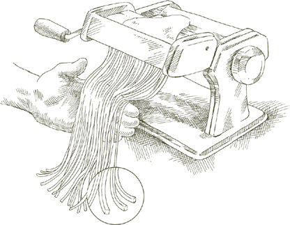
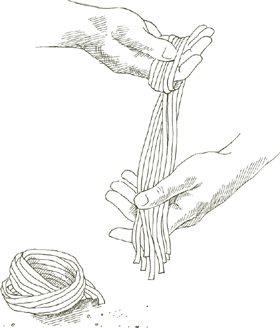
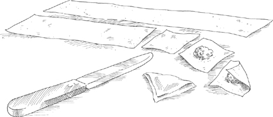
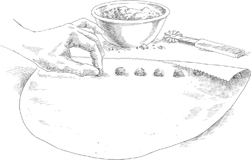
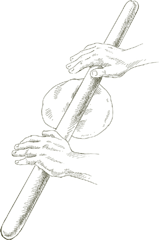
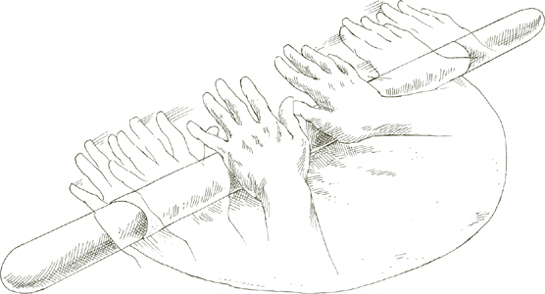
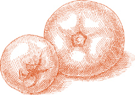

Кастрюля  Используйте легкую кастрюлю, например, эмалированную алюминиевую, которая быстро передает тепло и легко управляется, когда полна пасты и кипящей воды.
Используйте легкую кастрюлю, например, эмалированную алюминиевую, которая быстро передает тепло и легко управляется, когда полна пасты и кипящей воды.
Дуршлаг Обширный дуршлаг с ножками должен быть готов, надежно установленный в кухонной раковине или большой миске.
Вода Пасте нужно много воды, чтобы она могла свободно перемещаться, иначе она станет липкой. Для одного фунта пасты требуется четыре кварты воды. Никогда не используйте меньше трех кварт, даже для небольшого количества пасты. Добавьте еще одну кварту на каждые полфунта, но не готовьте более двух фунтов в одной кастрюле. Большие количества пасты трудно готовить правильно, а кастрюли с таким количеством воды тяжелые и опасные в обращении.
Соль На каждый фунт пасты добавьте не менее 1½ столовых ложек соли, больше, если соус очень мягкий и недостаточно соленый. Добавьте соль, когда вода закипит. Подождите, пока вода снова не начнет бурлить, прежде чем добавлять пасту.
Оливковое масло Никогда не добавляйте масло в воду, кроме случаев, когда готовите фаршированную домашнюю пасту. В последнем случае столовая ложка масла в кастрюле уменьшает трение и предотвращает разрыв фаршированной пасты.
Расчет порций Один фунт фабричной, упакованной сухой пасты должен дать 4–6 порций, в зависимости от того, что следует за пастой. Для приблизительного расчета порций свежей пасты смотрите раздел о домашней пасте.
Добавление пасты в кастрюлю Паста добавляется после того, как кипящая вода была посолена и снова закипела. Поместите всю пасту в кастрюлю одновременно и накройте кастрюлю на короткое время, чтобы ускорить возвращение воды к кипению. Следите за ней, чтобы избежать переполнения и гашения газового пламени. Когда вода снова закипит, готовьте либо без крышки, либо с крышкой, приоткрытой. Используя длинную деревянную ложку, перемешивайте пасту в момент, когда она попадает в воду, и часто перемешивайте в процессе приготовления.
• Если вы готовите длинную сухую пасту, такую как спагетти или перчателли, когда вы опускаете ее в кастрюлю, используйте длинную деревянную ложку, чтобы согнуть нити и полностью погрузить их. Не ломайте спагетти или любую другую длинную пасту на более мелкие кусочки.
• Если вы используете домашнюю пасту, соберите всю ее в кухонное полотенце, крепко держите один конец полотенца высоко над кипящей водой, ослабьте нижний конец и дайте пасте скользнуть в кастрюлю.
Аль денте Пасту нужно готовить до состояния, когда она будет упругой на вкус, аль денте. Упругость спагетти и другой фабричной пасты отличается от феттучини и другой домашней пасты. Последняя никогда не может быть такой же упругой и жевательной, как первая, но это не значит, что ее следует позволять стать слишком мягкой: она всегда должна предлагать некоторое сопротивление при укусе. Когда этого не происходит, паста становится тяжелой, теряет легкость и способность быстро передавать ароматы соуса.
Сливание Как только паста будет готова, и ни секунды позже, вы должны слить ее, вылив из кастрюли в дуршлаг. Потрясите дуршлаг несколько раз вбок и вверх-вниз, чтобы слить всю воду.
Соус и перемешивание Имейте соус готовым, когда паста будет готова. Не позволяйте слитой пасте сидеть в дуршлаге, ожидая, пока соус будет готов или разогрет. Перенесите приготовленную, слитую пасту без задержки в теплую сервировочную миску. Как только она окажется в миске, начните перемешивать ее с соусом. Если требуется тертый сыр, добавьте немного сразу и перемешайте пасту с ним. Тепло растопит сыр, который затем сможет сливаться кремообразно с соусом.
В последовательности шагов, ведущих к приготовлению блюда из пасты и его подаче на стол, нет ничего более важного, чем перемешивание. До момента перемешивания паста и соус являются двумя отдельными сущностями. Перемешивание соединяет их и делает единым целым. Масло или масло должны полностью и равномерно покрывать каждую ниточку пасты, проникать в каждую щель и переносить с собой ароматы компонентов соуса. Какой бы замечательный ни был соус, он не может просто лежать сверху или на дне тарелки. Если он не распределен широко и равномерно, паста, для которой он предназначен, будет иметь мало вкуса.
Когда вы добавляете соус, быстро перемешайте, используя вилку и ложку или две вилки, поднимая пасту с дна тарелки, разделяя ее, поднимая, опуская, переворачивая, закручивая вокруг. Если соус прилипает слишком густо, отделите его с помощью вилки и ложки, чтобы он мог равномерно распределиться.
Когда соус на основе масла, добавьте кусочек свежего масла и сделайте одно или два последних перемешивания пасты. Если соус на основе оливкового масла, следуйте той же процедуре, используя свежее оливковое масло вместо масла.
Примечание Свежая паста более впитывающая, чем фабричная паста, и обычно требуется больше масла или масла.
Подача Как только паста покрыта соусом, подавайте ее немедленно, приглашая ваших гостей и семью отложить разговоры и начать есть. Важно помнить, что с момента, как паста готова, не должно быть пауз в последовательности слива, покрытия соусом, подачи и еды. Готовую, горячую пасту нельзя оставлять, иначе она превратится в влажную, клейкую массу.
 Фабричная паста
Фабричная паста 
ТЕПЛАЯ, сухая паста, о которой говорят как о фабричной, включает такие знакомые формы, как спагетти, пенне и фузилли. Их нельзя сделать так же успешно дома, как в коммерческих паста-заводах с промышленным оборудованием. Сухая паста из фабрик не обязательно менее качественная, чем свежая паста, которую можно сделать дома. Напротив, для многих блюд фабричная паста является лучшим выбором, хотя для некоторых других может понадобиться особые качества домашней пасты. Различия между двумя категориями пасты и их общие применения обсуждаются в разделе 'Паста' введения.
Как сделать свежую пасту дома ЕСЛИ вы не живете в Эмилия-Романия, в городах и населенных пунктах которой все еще есть несколько магазинов, продающих пасту, сделанную вручную, вы можете сделать гораздо лучшую свежую пасту, либо методом скалки, либо методом машины, чем вы можете купить или съесть где-либо.
Тем не менее, необходимо сказать, что два метода не просто разные способы достижения одной и той же цели. Паста, раскатанная вручную, совершенно отличается от свежей пасты, сделанной с помощью машины. В пасте, раскатанной вручную, тесто тоньше за счет растягивания его с помощью быстрой последовательности движений рук по длине деревянного стержня длиной в ярд. В методе машины тесто сжимается между двумя цилиндрами, пока не достигнет желаемой тонкости.
Цвет пасты, растянутой вручную, заметно глубже, чем у пасты, тонкой с помощью машины; ее поверхность украшена едва заметным узором пересекающихся рифлений и впадин; при варке паста впитывает соус и выделяет влажность. На вкус она имеет легкое, мягкое прикосновение, которое не может воспроизвести никакая другая паста. Но изучение метода скалки, к сожалению, не является просто вопросом следования инструкциям, а скорее изучением ремесла. Инструкции должны выполняться снова и снова с большим терпением и осваиваться парой ловких, готовых рук, пока движения не будут выполняться интуитивно, а не осознанно.
Машина, с другой стороны, требует практически никаких навыков для использования. Как только вы научитесь сочетать яйца и муку в тесто, которое не слишком влажное и не слишком сухое, все, что вам нужно сделать, это следовать серии исключительно простых механических шагов, и вы сможете произвести отличную свежую пасту недорого, дома, с самой первой попытки.
Мука В Италии классическая свежая яичная паста, произведенная в болоньезском стиле, делается из муки, известной как 00, doppio zero. Это мука белого цвета, мягкая как тальк, менее крепкая по глютену, чем американская универсальная мука как отбеленной, так и не отбеленной. Когда я готовлю свежую пасту дома за пределами Италии, я обнаружил, что неотбеленная универсальная мука дает наиболее последовательный и удовлетворительный результат: с ней легко работать; паста, которую она производит, пышная и имеет замечательную текстуру и аромат.
Существует путаница относительно достоинств семолины, которая производится из твердых сортов пшеницы. На итальянском это называется semola di grano duro, и вы найдете ее в списке всех итальянских упаковок фабричной пасты. Это единственная подходящая мука для промышленно произведенной пасты, но я не предпочитаю ее для домашнего использования. Во-первых, ее консистенция часто зернистая, даже когда она продается как мука для пасты, и зернистая семолина неудобна в работе. Даже когда она измельчена до тонкой, шелковистой текстуры, которую вы нуждаетесь, вам нужно использовать машину, чтобы раскатать ее; пытаться сделать это с помощью скалки — это почти безнадежная борьба. Мой совет — оставить семолину фабрикам и коммерческим производителям пасты: дома используйте неотбеленную универсальную муку.
Машина Единственный вид машины для пасты, который вы должны рассмотреть, это тот, который имеет один набор параллельных цилиндров, обычно сделанных из стали, для вымешивания и раскатывания теста, и двойной набор резаков, один широкий для феттучини, другой для тальолини, очень узких лапшей. Практически все эти машины ручные, но существуют и электрические, а также есть отдельный мотор, который можно купить и который легко подключается к валу машины, чтобы заменить ручку.
Не поддавайтесь искушению использовать одно из тех ужасных устройств, которые пережевывают яйца и муку с одного конца и экструдируют выбор форм пасты с другого конца. То, что получается, это слизистый и совершенно презренный продукт, и кроме того, это устройство является раздражающей неприятностью для чистки.

Для желтого теста для пасты 1 чашка муки без отбеливания и 2 крупных яйца дают примерно ¾ фунта домашней пасты, что даст 3 стандартные порции или 4 порции для закуски. Используйте указанные выше пропорции муки к яйцам как приблизительные, которые вам может понадобиться изменить в зависимости от способности яиц к впитыванию, а иногда даже от влажности или ее отсутствия на кухне.
Примечание Если вы готовите тесто для фаршированной желтой пасты, добавьте ½ столовой ложки молока к указанным выше пропорциям.
Для зеленого теста для пасты 1½ чашки муки без отбеливания, 2 крупных яйца и либо ½ упаковки замороженного шпината весом 10 унций, размороженного, ИЛИ ½ фунта свежего шпината. Выход составляет примерно 1 фунт зеленой пасты, что дает 4 стандартные порции.
Если вы используете размороженный шпинат, готовьте его в закрытой сковороде с ¼ чайной ложкой соли, пока он не станет мягким и не потеряет свой сырой вкус. Если вы используете свежий шпинат, вымойте его и приготовьте. Слейте любой шпинат от жидкости, и когда он остынет, чтобы можно было с ним работать, сожмите его в руках, чтобы избавиться от оставшейся жидкости. Очень мелко нарежьте ножом, но не в кухонном комбайне, который вытягивает слишком много влаги.
Примечание Кроме шпината, никакие другие красители не могут быть рекомендованы в качестве альтернативы основному желтому тесту для пасты. Другие вещества не имеют вкуса и, следовательно, не представляют гастрономического интереса. Или, если они действительно придают вкус, как, например, у жалкой черной пасты, тесто которой окрашено чернилами кальмара, его вкус не свежий. Паста не нуждается в украшении, кроме цветов и ароматов соуса.
Смешивание яиц и муки Поскольку никто не может заранее точно сказать, сколько муки нужно, разумный метод смешивания яиц и муки — это делать это вручную, что позволяет вам регулировать пропорцию муки по мере необходимости.
Вылейте муку на рабочую поверхность, сформируйте из нее холмик и выемите глубокую ямку в центре. Разбейте яйца в ямку. Если вы делаете зеленое тесто, также добавьте нарезанный шпинат на этом этапе.
Легко взбейте яйца вилкой в течение примерно 1 минуты, как будто вы готовите омлет. Если используете шпинат, взбивайте еще минуту. Наклоните немного муки на яйца, постепенно смешивая ее вилкой, пока яйца не перестанут быть жидкими. Соберите края холмика вместе руками, но отодвиньте часть муки в сторону, оставляя ее в стороне, пока она вам не понадобится. Работайте с яйцами и мукой, используя пальцы и ладони, пока не получите однородную массу. Если она все еще влажная, добавьте больше муки.

Когда масса будет вам приятна, и вы подумаете, что больше муки не требуется, вымойте руки, высушите их и проведите простой тест: нажмите большим пальцем в центр массы; если он выходит чистым, без каких-либо липких остатков, больше муки не нужно. Уберите массу из яиц и муки в сторону, тщательно очистите рабочую поверхность от любых рыхлых или застывших кусочков муки и крошек и приготовьтесь к замесу.
Замес Правильный замес теста может быть самым важным шагом в приготовлении хорошей пасты с помощью машины, и это один из секретов превосходной свежей пасты, которую вы можете приготовить дома. Тесто для пасты можно замесить в машине, но это не намного быстрее, чем делать это вручную, и это гораздо менее удовлетворительно, особенно когда замешивается в кухонном комбайне.
Вернитесь к массе муки и яиц. Надавите на нее основанием ладони, держа пальцы согнутыми. Сложите массу пополам, сделайте полтора оборота, снова сильно надавите на нее основанием ладони и повторите операцию. Убедитесь, что вы всегда поворачиваете шарик теста в одном направлении, по часовой стрелке или против часовой стрелки, как вам больше нравится. Когда вы замесите его таким образом в течение 8 полных минут, и тесто станет гладким, как детская кожа, оно готово для машины.

Примечание Если вы работаете с большой массой, вы можете разделить ее на 2 или более частей и закончить замес одной, прежде чем перейти к другой. Держите любую часть массы, с которой вы не работаете, или тесто, которое вы закончили замешивать, плотно закрытой в пленке.
Раскатывание Разделите каждый шарик теста, сделанный из 2 яиц, на 6 равных частей. Другими словами, количество кусочков теста, которые вы получите для раскатывания, должно быть в три раза больше, чем количество яиц, которые вы использовали.
Разложите чистые, сухие кухонные полотенца на рабочем столе рядом с машиной. Если вы собираетесь делать много пасты, вам понадобится много места на столе и много полотенец.

Установите пару гладких цилиндров, ролики для раскатки, на максимальное открытие. Уплощите один из кусочков теста, ударив по нему ладонью, и пропустите его через машину. Сложите тесто вдвое, уменьшив его длину до одной трети, и снова пропустите его через машину узким концом. Повторите операцию 2–3 раза, затем положите раскатанный кусок пасты на полотенце на столе. Поскольку у вас будет много полосок, начните с одного конца стола, оставляя место для остальных.
Возьмите другой кусок теста, расплющите его рукой и пропустите через машину точно так же, как описано выше. Положите полоску рядом с ранее раскатанной на полотенце, но не позволяйте им соприкасаться или перекрывать друг друга, так как они все еще достаточно влажные, чтобы прилипнуть друг к другу. Продолжайте раскатывать все оставшиеся куски таким же образом.

Примечание Это процедура, которую следует соблюдать, если вы собираетесь нарезать пасту на лапшу. Если вы планируете использовать ее для равиоли или другие фаршированные формы, пожалуйста, смотрите примечание о фаршированной пасте.
Закройте открытие между роликами машины на один щелчок. Возьмите первую полоску пасты, которую вы раскатали, и пропустите ее один раз через ролики, подавая узким концом. Не складывайте ее, а разложите плоско на полотенце, и переходите к следующей полоске пасты в последовательности.
Когда все полоски пасты прошли через более узкое открытие один раз, сблизьте ролики еще на один щелчок и снова пропустите полоски пасты через них, следуя описанной выше процедуре. Вы заметите, что полоски становятся длиннее, так как они становятся тоньше, и если нет достаточно места, чтобы разложить их на столе, вы можете позволить им свисать за край. Продолжайте раскатывать полоски в последовательности, постепенно закрывая открытие между роликами на один щелчок за раз, пока паста не станет такой тонкой, как вам нужно. Эта пошаговая процедура раскатки, которую коммерческие производители свежей пасты значительно сокращают или полностью пропускают, отвечает, наряду с правильным замесом, за то, что хорошая паста имеет тело и структуру.
Примечание о фаршированной пасте Тесто для пасты, которое будет использоваться в качестве обертки для фарша, должно быть мягким и липким. Поэтому вам нужно внести следующее изменение в последовательность, описанную выше: берите только один кусок теста за раз и проходите через весь процесс раскатки, нарезайте его и фаршируйте, как описано в выбранном вами рецепте. Затем переходите к следующему куску. Держите все куски теста, ожидающие раскатки, плотно завернутыми в пленку.
Сушка Для всей нарезанной пасты, феттучини, тальолини, паппарделле и так далее, дайте полоскам, разложенным на полотенцах, высохнуть в течение 10 минут или более, в зависимости от температуры и вентиляции вашей кухни. Время от времени переворачивайте полоски. Паста готова к нарезке, когда она все еще достаточно эластична, чтобы не трескаться при нарезке, но не настолько мягкая и влажная, чтобы нити прилипали друг к другу. Паста не требует дополнительной сушки, кроме для хранения.
Нарезка плоской пасты Используйте более широкие ножи на машине, чтобы сделать феттучини, а более узкие для тоннарелли (см. ниже) или тальолини. Когда полоски пасты достаточно, но не чрезмерно высохли, пропустите их через выбранный резак. Когда ленты лапши выходят из резака, разделите их и разложите на полотенцах. Для приготовления соберите пасту в одно полотенце, как описано в "Основах приготовления пасты", и опустите в кипящую подсоленную воду.
• Тоннарелли Одна из самых интересных форм — это тонкая квадратная лапша из центральной Италии, которая прекрасно сочетается с исключительным разнообразием соусов. Она также известна как маккерони алла китарра из-за инструмента, похожего на гитару, который используется в центральной Италии для ее нарезки. Она такая же толстая, как и широкая. Ее более плотное тело придает ей субстанцию и «укус» фабричной пасты, в то время как ее поверхность сохраняет текстуру и способность к нежным соусам всей домашней пасты.
Машина идеально справляется с приготовлением тоннарелли. Тесто для тоннарелли должно быть оставлено толще, чем для феттучини и других лапшей. Чтобы получить квадратное сечение, которое должна иметь эта лапша, толщина полоски пасты должна быть равна ширине более узких канавок резака машины. На большинстве машин последнее настройка раскатки для тоннарелли — это второе перед последним. Чтобы убедиться, пропустите немного теста через это настройку и убедитесь, что его толщина равна ширине более узких резательных канавок.

• Паппарделле В Болонье, городе, где домашняя паста царит, эта широкая лапша, наполняющая глаз, является одним из любимых видов нарезки. Ее большая поверхность принимает значительные соусы, будь то мясные или овощные, или их комбинацию. Ее нужно нарезать вручную, так как у машины нет резаков для паппарделле. Нарежьте раскатанное тесто на полоски длиной около 6 дюймов (15 см) и шириной 1 дюйм (2.5 см). Кулинарный колесик — самый эффективный инструмент для этой цели, а рифленый вид дает самые привлекательные результаты.

• Тальолини Когда вы используете более широкие резаки паста-машины, то что вы получаете — это феттучини. Тальолини, классическая болоньезская лапша и наиболее подходящая для болоньезского мясного соуса, немного шире и должна быть нарезана вручную. Когда раскатанные полоски пасты достаточно высохли, но все еще достаточно мягкие, чтобы сгибаться без трещин, сложите их свободно вдоль их длины, создавая плоский рулон шириной около 3 дюймов (7.5 см) с боков. С помощью ножа или аналогичного ножа нарежьте рулон на полоски шириной около ¼ дюйма (0.6 см). Нарезайте параллельно оригинальной длине полоски пасты, чтобы, когда вы развернете тальолини, лапша была полной длины полоски.

Сушка лапши для длительного хранения Часто предполагается, что свежая паста должна быть мягкой. Ничто не может быть более обманчивым. Она действительно мягкая в момент приготовления, и вполне нормально готовить её в этом состоянии. Но если подождать, она высохнет; это естественный процесс, и нет причин вмешиваться в него. Напротив, все искусственные методы, с помощью которых свежую пасту удерживают мягкой — посыпание кукурузной мукой, упаковка в пленку, охлаждение — не только ненужны, но и фактически подрывают качество пасты и должны быть избегаемы. При правильном приготовлении высушенная свежая паста сохраняет всю текстуру и вкус, которые она имела изначально. Вялый продукт, продаваемый как «свежая» паста, этого не делает.

После сушки свежую домашнюю лапшу можно хранить в шкафу в течение нескольких недель, как коробку спагетти. Когда лапша нарезана, собирайте несколько прядей за раз и закручивайте их в круглые гнезда. Позвольте им полностью высохнуть перед хранением, потому что, если останется влага, когда они будут убраны, появится плесень. Для надежности дайте гнездам высохнуть на полотенцах в течение 24 часов. Когда они высохнут, поместите их в большую коробку или банку, чередуя каждый слой гнезд с бумажными полотенцами. Обращайтесь осторожно, так как они хрупкие. Храните в сухом шкафу, а не в холодильнике.
Примечание Позвольте немного больше времени для приготовления высушенной свежей пасты.
Именно в своих нарезках для супа домашняя паста, с её легким яичным вкусом и мягкой текстурой, явно оказывается более желательной, чем фабричная паста в коробках.
• Мальтаглиати Это лучшая паста, которую можно использовать для густых супов, особенно бобовых. Её название означает «плохо нарезанная», потому что её неправильная ромбовидная форма не является длинной, ровной лентой. Сложите полоски пасты в плоские рулоны, как описано выше для тальятелле. Вместо того чтобы нарезать рулон прямо, как вы делали бы для обычной лапши, нарежьте его по диагонали, сначала отрезая один угол, затем другой. Это оставляет рулон пасты с острым концом в центре его нарезанного конца. Выравните этот конец прямым срезом, затем снова отрежьте углы, как раньше. Когда вы закончите нарезать один рулон, немедленно разверните и ослабьте мальтаглиати, чтобы они не прилипли друг к другу.
Каждый раз, когда вы готовите пасту, хорошая идея — использовать часть теста для мальтаглиати. Его можно высушить для длительного хранения, как описано выше, и у вас будет возможность добавить его в суп в любое время.

• Квадруччи Это маленькие квадраты, как говорит их итальянское название, и они изготавливаются, сначала нарезая пасту на ширину тальятелле, а затем, вместо того чтобы разворачивать лапшу, нарезая её поперек на квадраты. Квадруччи особенно хороши в тонком домашнем мясном бульоне с горошком и пассерованными куриными печенками.
• Манфригуль Это паста, нарезанная на маленькие, похожие на ячмень кусочки, специальность Романьи, северо-восточной прибрежной области на Адриатике. Её крепкая, неповторимая жевательность создает приятный текстурный контраст в супе.
Приготовьте замешанное тесто. Раскатайте тесто ладонью до толщины около 2 дюймов (5 см). Нарежьте его на как можно более тонкие ломтики и разложите их на чистом, сухом полотенце. Переверните их один или два раза и дайте высохнуть, пока они не потеряют свою липкость, но не так, чтобы они стали хрупкими. В зависимости от температуры и вентиляции на кухне, это может занять от 20 до 30 минут. Нарежьте один из ломтиков, чтобы проверить, липкое ли тесто. Если нет, перенесите все нарезанные кусочки на разделочную доску и нарежьте их очень мелко острым ножом.
Примечание Манфригуль можно нарезать в кухонном комбайне, используя стальной нож. Включайте мотор на короткое время, чтобы обеспечить равномерную нарезку. Остановитесь, когда достигнете консистенции очень мелких гранул. Когда закончите, часть теста станет порошкообразной. Избавьтесь от неё, высыпав содержимое чаши комбайна в мелкое сито и стряхнув порошковое тесто.
Хранение манфригуль: Он хранится так хорошо, что хорошая идея — всегда иметь его под рукой. Разложите на сухом, чистом полотенце и дайте ему полностью высохнуть. Это занимает около 12 часов, поэтому вы можете оставить его на ночь. Храните в шкафу в закрытой стеклянной банке.
Используйте манфригуль в овощных супах или в любом супе, где вы могли бы использовать рис или ячмень. Он также отлично подходит сам по себе, в Основном домашнем мясном бульоне, подается с тертым пармезаном.
Для всех форм, указанных ниже, работайте только с мягким, влажным, только что приготовленным тестом. Перед началом прочитайте инструкции, приведенные в заметке о начиненной пасте. Мягкость теста, которое только что раскатано, облегчает формирование, а его липкость необходима для создания плотного запечатывания, которое предотвратит вытекание начинки во время приготовления.
• Тортеллини Пельмени, которые в Болонье называются тортеллини, в Романье — провинциях Равенна, Форли и Римини — называются каппелетти. Начинки могут варьироваться, но метод приготовления оберток остается тем же. Обрежьте полоски пасты до прямоугольных лент шириной 1½ дюйма (3.8 см). Не выбрасывайте обрезки, а вдавите их в один из шариков теста, который будет раскатан позже.

Нарежьте полоски на квадраты размером 1½ дюйма (3.8 см). Положите около ¼ чайной ложки начинки, указанной в рецепте, в центр каждого квадрата. Сложите квадрат по диагонали пополам, образуя два треугольника, один над другим. Края верхней половины треугольника должны быть на расстоянии примерно ⅛ дюйма (0.3 см) от краев нижней половины. Плотно прижмите края вместе кончиком пальца, надежно запечатывая их.

Возьмите треугольник за один из углов его длинной стороны, сложенной стороны. Возьмите другой конец другой рукой, удерживая его между большим и указательным пальцами. Треугольник теперь должен быть обращен к вам, его длинная сторона параллельна кухонному столу, а кончик направлен прямо вверх. Не отпуская конец, обведите указательным пальцем одной руки вокруг задней стороны треугольника, и, поворачивая кончик пальца к себе, поднимите его к основанию треугольника, толкая его вверх в направлении кончика. При этом вершина треугольника должна наклониться к вам и сложиться над основанием. Тем же движением сведите вместе два угла, которые вы держите, образуя кольцо вокруг кончика вашего указательного пальца, который все еще должен быть обращен к вам. Накройте один угол другим, плотно прижимая их вместе, чтобы надежно закрыть кольцо. Снимите тортеллино с пальца и положите его на чистое, сухое полотенце.
Пока вы продолжаете их делать, выкладывайте все тортеллини в ряды на полотенце, убедившись, что они не касаются друг друга, иначе они прилипнут и порвутся при разделении. Хотя их можно готовить сразу, вероятно, вы будете делать их за несколько часов или даже за день до этого. При приготовлении заранее переворачивайте их время от времени, чтобы они равномерно высыхали со всех сторон. Не позволяйте им касаться друг друга, пока тесто не станет жестким, иначе вы получите порванные тортеллини.
Совет: Прежде чем делать тортеллини в первый раз, нарежьте бумажные салфетки на квадраты размером 1½ на 1½ дюйма (3.8 на 3.8 см) и практикуйтесь на них, пока не почувствуете, что делаете это правильно.
• Тортеллони, Тортелли, Равиоли Их называют разными именами, и они могут различаться по размеру и начинке, но все они имеют одну форму: квадрат. Чтобы их сделать, обрежьте мягкое, свежее тесто для пасты на длинный прямоугольник, который в два раза шире, чем пельмень, указанный в рецепте.

Предположим, что в рецепте требуются тортеллони с шириной сторон 2 дюйма (5 см). Нарежьте тесто на длинный прямоугольник шириной 4 дюйма (10 см). Положите точки начинки через каждые 2 дюйма (5 см). Расстояние между точками должно всегда быть таким же, как ширина пельменя, в данном случае 2 дюйма (5 см). Ряд точек с начинкой должен быть параллелен краям прямоугольника и отступать на 1 дюйм (2.5 см) — половину ширины пельменя — от одного края. (Это гораздо легче сделать, чем попытаться визуализировать. Попробуйте сначала с бумагой, нарезанной по размеру, и вы увидите.)
Как только прямоугольник будет покрыт начинкой, поднимите край, находящийся дальше от ряда точек, над ним и соедините его с другим краем, создавая длинную трубку, которая заключает начинку. Используйте рифленый нож для теста, чтобы обрезать соединенные края и оба конца трубки, запечатывая ее со всех сторон. Тем же ножом нарежьте трубку поперек между каждой горкой начинки, разделяя ее на квадраты.

Разложите квадраты на чистых, сухих полотенцах, убедившись, что они не касаются друг друга, пока тесто еще мягкое. Если они касаются, они прилипнут друг к другу и порвутся, когда вы попытаетесь их разъединить. Если вы не готовите их сразу, переворачивайте квадраты время от времени, пока они сохнут.
• Гарганелли Гарганелли, ручная, рифленая трубчатая паста, является специальностью Имолы и других городов Романьи. Его гибкая форма, несколько напоминающая фабричную пенне, и его текстура, похожая на домашнюю пасту, создают уникальные и вкусные ощущения в сочетании с подходящим соусом. Хотя он не фаршированный, гарганелли должен быть сделан из мягкого, свежего теста, как тортеллини и тортеллони выше.
В Романьи гарганелли делают с помощью небольшого инструмента, похожего на ткацкий станок, называемого петтине, или гребнем. В качестве замены вы можете использовать чистый, новый гребень для волос с зубьями длиной не менее 1½ дюйма (3.8 см). Афро-гребень подойдет. Вам также нужен небольшой деревянный стержень или гладкий, идеально круглый карандаш диаметром ¼ дюйма (0.6 см) и длиной 6–7 дюймов (15–18 см).

Нарежьте мягкое, свежее тесто на квадраты размером 1½ дюйма (3.8 см). Положите гребень горизонтально на стол, зубья направлены от вас. Положите квадрат пасты по диагонали на гребень так, чтобы один угол был направлен к вам, а другой — к кончикам зубьев гребня. Положите деревянный стержень или карандаш на квадрат и параллельно гребню. Заверните угол квадрата, обращенный к вам, вокруг стержня и, с легким нажимом вниз, толкните стержень от себя и с гребня. Наклоните стержень на его конец, и маленькая рифленая трубка пасты соскользнет. Разложите гарганелли на чистом, сухом полотенце, убедившись, что они не касаются друг друга. Гарганелли нельзя готовить заранее и сушить, как другую пасту, потому что они трескаются во время варки. Их лучше готовить сразу, но если вы не можете этого сделать, погрузите их в кипящую воду на несколько секунд, сразу слейте, перемешайте с оливковым маслом и разложите на подносе, чтобы они остыли.
• Стричетти Это форма, известная как “бабочки” на английском или фарфаллини на стандартном итальянском; стричетти — это диалект Романьи, где эта форма, вероятно, возникла. Это самая простая из всех форм пасты, которую можно сделать вручную. Нарежьте мягкое, свежее тесто для пасты на прямоугольники размером 1 на 1½ дюйма (2.5 на 3.8 см). Сожмите каждый прямоугольник посередине его длинных сторон, сводя стороны вместе и крепко сжимая их. Существует также немного более сложный метод, который имеет преимущество в создании меньшей горки в центре. Поместите большой палец в центр прямоугольника и сложите центр одной из длинных сторон к нему; замените большой палец кончиком указательного пальца, и сжимая, приведите центр другой стороны прямоугольника к встрече с ним. Плотно сожмите, чтобы зафиксировать складку.
Сушка фаршированной и формованной пасты Тортеллини, равиоли и другая фаршированная или формованная паста, описанная выше, могут храниться как минимум неделю после полного высыхания и затвердевания. Позвольте пасте высохнуть в течение 24 часов, переворачивая ее время от времени, прежде чем убрать. Ее можно хранить в шкафу, как это делается в Италии, но если вы предпочитаете хранить фаршированную пасту в холодильнике, вы можете это сделать. Убедитесь, что она полностью высохла, иначе появится плесень.
Необходимое оборудование Чтобы сделать пасту вручную, вам нужен большой, устойчивый стол и скалка для пасты. Для нарезки пасты после раскатки было бы полезно иметь китайский нож, который наиболее близок к тому типу ножа, который используется в Болонье.
Глубина 24 дюйма (60 см) достаточна для стола, но чем длиннее он, тем легче с ним работать. Три фута (90 см) будет достаточно, а 4½ фута (135 см) будет идеально.
Лучший материал для столешницы — это дерево, либо массивная древесина, либо деревянный блок для нарезки. Формайка или Корьян подойдут. Наименее желательный материал — мрамор, который своей холодностью препятствует тесту, делая его неэластичным.
Если столешница деревянная, убедитесь, что край, обращенный к вам, не имеет острых углов, так как это может порезать тесто для пасты, свисающее с него. Если он не гладкий и округлый, отшлифуйте его, чтобы сделать таким. Ламинированные столешницы обычно не имеют этой проблемы, так как край либо покрыт молдингом, либо имеет тупую отделку.
Скалка для пасты уже и длиннее, чем скалки для выпечки. Ее классические размеры — 1½ дюйма (3.8 см) в диаметре и 32 дюйма (81 см) в длину. Найти ее вне Эмилии-Романьи не так просто, хотя некоторые особенно хорошо укомплектованные магазины кухонной утвари иногда ее имеют. Хороший магазин древесины может сделать вам одну из твердой древесины, толщина которой может варьироваться от 1от ½ до 2 дюймов (5 см) (от 3от .8 до 5 см). Отшлифуйте концы скалки, чтобы они были идеально гладкими.
Уход и хранение скалки: Вымойте ее с мылом и водой, затем тщательно промойте под холодной проточной водой. Хорошо высушите мягкой тканью. Позвольте скалке полностью высохнуть в умеренно теплом помещении.
Увлажните ткань нейтральным растительным маслом и протрите им всю поверхность скалки. Не наносите слишком много масла, оно должно быть очень легким слоем. Когда масло впитается в древесину, протрите скалку мукой.
Чтобы поддерживать скалку в хорошем состоянии, повторяйте «уход» каждые десяток использований скалки.
Храните скалку в подвешенном состоянии, чтобы избежать ее деформации. Вкрутите глазок в один конец и повесьте скалку на крючок, установленный на стене или внутри шкафа. Будьте осторожны, чтобы не повредить скалку, так как любые неровности на ее поверхности могут порвать пасту.
Перед тем как взять скалку, внимательно прочитайте все следующие инструкции. Движения со скалкой напоминают балет рук, и их следует изучать так же, как танцор изучает свою партию. Прежде чем ваши руки смогут взять на себя управление и их действия станут интуитивными, логика и последовательность движений должны четко развернуться в сознании.
Тесто Приготовьте замешанный шарик теста точно так, как описано в разделе «Паста методом машинного замеса».
Совет: Когда вы впервые делаете пасту вручную, вам будет легче начать с зеленого теста для пасты. Оно мягче и легче растягивается.
Отдых теста Даже когда вы станете опытным в использовании скалки, желательно дать замешанному тесту отдохнуть и расслабить глютен перед раскатыванием. Когда тесто будет полностью замешано, заверните шарик теста в пленку и дайте ему отдохнуть при комнатной температуре не менее 15 минут и до 2 часов.
Первое движение Снимите пленку с шарика теста и поместите тесто на удобном расстоянии в центре рабочей поверхности. Немного прижмите его, ударив два или три раза ладонью.

Поместите скалку поперек слегка приплюснутого шарика, примерно на одну треть пути к его центру. Скалка должна быть параллельна краю стола, обращенному к вам.
Раскатайте шарик теста, сильно толкая скалку вперед, позволяя ей слегка откатиться назад к исходной точке, и снова толкая вперед, повторяя операцию 4–5 раз. Никогда не позволяйте скалке катиться на край теста или за него.
Поверните тесто на четверть оборота и повторите вышеописанную операцию. Продолжайте поворачивать постепенно более плоский диск теста на четверть оборота вначале, а затем постепенно меньше, но всегда в одном направлении. Если вы делаете это правильно, шарик теста будет расправляться в равномерно сплюснутую, регулярно круглую форму. Когда он будет открыт до диаметра около 8–9 дюймов (20–23 см), переходите к следующему движению.
Второе движение Теперь вы начнете растягивать тесто. Одной рукой прижмите ближайший край теста. Поместите скалку на противоположном, дальнем крае теста, положив ее параллельно вашей стороне стола. Одна рука будет работать со скалкой, в то время как другая будет служить опорой, удерживая край теста ближе к вам.
Согните дальний край теста вокруг скалки. Начните катить скалку к себе, поднимая столько теста, сколько нужно, чтобы оно плотно легло под скалку. Держите ближайший край теста неподвижным другой рукой. Катите скалку к себе, затем используйте основание ладони, чтобы оттолкнуть ее назад. Не катите ее назад, а толкайте, делая лист теста натянутым между двумя руками и растягивая его. Это должно выполняться очень быстро, в непрерывном и плавном движении. Не оказывайте никакого давления вниз в этом движении. Не позволяйте руке, работающей со скалкой, оставаться на тесте дольше 2–3 секунд на одном месте.

Продолжайте катить скалку к себе, останавливаясь, толкая ее вперед, чтобы растянуть тесто, поднимая с собой больше теста, катите ее к себе, останавливайтесь, растягивайте, повторяйте последовательность несколько раз, пока не поднимете все тесто на скалке. Затем, пока тесто обернуто вокруг скалки, поверните скалку на пол-оборота — 180° — так, чтобы она указывала на вас, и разверните тесто, открыв его в плоском виде.
Повторите операцию катания и растягивания, описанную выше, пока тесто снова полностью не обернется вокруг скалки. Поверните скалку еще на 180° в том же направлении, как и прежде, раскрутите тесто с нее и повторите операцию еще раз. Продолжайте эту процедуру, пока лист теста не будет растянут до диаметра около 12 дюймов (30 см). Немедленно переходите к следующему движению.
Третье движение Это решающий шаг, в котором вы растянете лист теста почти вдвое по сравнению с предыдущим диаметром, когда оно перестанет быть просто тестом и станет пастой. Когда ваши руки овладеют ритмичным и бездавлением выполнением этого движения, вы овладеете одним из самых ценных кулинарных ремесел: домашней пастой в болоньезском традиции.
Круг теста лежит плоско перед вами на столе. Поместите скалку на его дальнем конце, параллельно краю стола ближе к вам. Согните конец теста вокруг центра скалки и катите скалку к себе, поднимая с собой около 4 дюймов (10 см) листа теста. Легко накройте обеими руками центр скалки, не позволяя пальцам касаться ее. Катите скалку от себя, а затем к себе, поднимая с собой не более чем оригинальные 4 дюйма (10.2 см) теста. В то время как вы катите скалку вперед и назад, раздвигайте руки друг от друга и к концам скалки, а затем обратно к центру, быстро повторяя движение несколько раз.

Когда ваши руки движутся от центра, пусть основания ваших ладоней касаются поверхности теста, тянув его, фактически растягивая его к концам скалки. В то время как вы скользите руками от центра к концам, вы должны катить скалку к себе. Имейте в виду, что в этом движении есть некоторое давление, но оно направлено вбок, а не вниз. Если вы будете нажимать на тесто, оно не растянется, потому что прилипнет к скалке.
Когда руки движутся обратно к центру, они должны плавно скользить над тестом, едва касаясь его. Вы хотите растянуть тесто наружу, к концам скалки, а не тянуть его обратно к центру. В то время как вы возвращаете руки к центру скалки, катите ее вперед, от себя.
Ваши руки должны быстро вылетать и возвращаться, касаясь теста только основанием ладони, прикладывая усилие, когда они движутся наружу, никогда не оказывая веса. И все это время вы также должны раскачивать скалку вперед и назад.
Поднимите еще несколько дюймов теста на скалке и повторите комбинированное движение: руки движутся наружу и внутрь, скалка раскачивается вперед и назад.
Когда вы подняли и растянули все, кроме последних нескольких дюймов теста, поверните скалку на 180°, раскрутите лист теста, открыв его в плоском виде, и начните снова с дальнего конца, повторяя всю растягивающую операцию, описанную выше.

Когда лист теста становится больше, позвольте ему свисать с ближайшей стороны стола. Он будет действовать как противовес и способствовать растягивающему действию. Но не наклоняйтесь к нему, потому что вы можете его порвать. Когда вы поднимаете тесто на скалке, вы позволите концу листа постепенно скользить обратно на стол.
Когда вы полностью повернули лист пасты и он полностью растянут, разверните его на столе и используйте скалку, чтобы разгладить любые складки.
Все третье движение должно быть выполнено за 10 минут или меньше для стандартного количества теста для пасты.
• Раскатывание шара теста в тонкий лист пасты — это гонка со временем. Тесто можно растягивать, пока оно мягкое и эластичное, но его гибкость недолговечна. Как только тесто начинает сохнуть, оно перестает поддаваться и начинает трескаться. С самого начала необходимо работать над развитием скорости.
• Не готовьте пасту, когда духовка включена, или рядом с горячим радиатором, или на сквозняке. Все это вызывает высыхание теста.
• Работайте с тестом в пределах досягаемости ваших рук, чтобы лучше контролировать свои движения.
• Прежде чем начать раскатывать настоящее тесто, может быть полезно попробовать движение растягивания, используя круглый лист масляной ткани или не липкий пластик.
Проблемы: их причины и возможные решения
• Дыры в пасте. Это случается со всеми, иногда даже с экспертами. Обычно это не серьезно. Заделайте тесто, слегка накрывая края разрывов. Запечатайте слегка увлажненными кончиками пальцев, если необходимо. Разгладьте заплатку скалкой и продолжайте работать с тестом.
• Мелкие трещины по краям. Это означает, что тесто начало сохнуть быстрее, чем вы его растягивали. Или вы сделали край листа тоньше, чем центр. Лист нельзя растянуть дальше, но если он уже достаточно тонкий, его все еще можно использовать.
• Тесто разваливается. Либо вы позволяете ему высохнуть, не растягивая его достаточно быстро, либо вы изначально замесили его слишком сухим, с избытком муки. Это фатальный симптом. Начните заново, уделяя особое внимание тому, чтобы при замесе получить тесто, которое будет нежным и эластичным.
• Вы не можете сделать пасту достаточно тонкой. В основном это вопрос практики и настойчивости. Перечитайте описания движений растягивания. Работайте быстрее. Также могут быть технические причины: тесто не было замешано достаточно долго или тщательно; в нем слишком много муки; вы не дали ему отдохнуть после замеса; на кухне может быть слишком жарко, слишком сухо или слишком сквознячно.
• Лист прилипает к себе или к скалке. Вы, возможно, оказываете слишком сильное давление вниз во время растягивания. Или вы замесили тесто слишком мягким, с недостаточным количеством муки. В этом случае вы можете спасти тесто, посыпав его мукой и равномерно распределив ее по листу.
• Паста слишком толстая для фетучини или тортеллини, но выглядит слишком хорошо, чтобы выбрасывать. Нарежьте ее на мальтальяти, квадруччи или манфригуль и используйте в супе. Если она очень толстая, дайте достаточно времени для приготовления.
Сушка домашней пасты Расстелите сухое, чистое полотенце на столе или рабочей поверхности и положите лист пасты ровно на полотенце, убедившись, что нет складок. Пусть одна треть листа свисает за край стола или поверхности. Через примерно 10 минут переверните лист, чтобы другая его часть свисала. Еще через 10 минут снова переверните. Общее время сушки зависит от мягкости теста и температуры и вентиляции в комнате. Тесто должно потерять достаточно влаги, чтобы не прилипать к себе при складывании и нарезке, но не должно пересыхать слишком сильно, иначе оно станет хрупким и треснет. Обычно оно готово, когда поверхность пасты начинает выглядеть как кожа.
Нарезка домашней пасты Когда тесто достигнет желаемой степени сухости, намотайте лист на скалку, уберите полотенце со стола и разверните пасту со скалки, положив ее на рабочую поверхность. Поднимите край листа, который дальше от вас, и сложите лист свободно на 7.5 см от края. Сложите его снова и снова, пока весь лист не будет сложен в длинный, плоский, прямоугольный рулон шириной около 7.5 см.
С помощью ножа или другого подходящего инструмента нарежьте рулон поперек на ленты шириной 0.6 см для tagliatelle, немного уже для fettuccine. Разверните ленты и разложите их на сухом, чистом полотенце. См. инструкции по сушке пасты для долгосрочного хранения и для других видов нарезки.
Использование домашней пасты для tortellini и других форм Если вы собираетесь делать фаршированную пасту и другие формы, которые требуют мягкого теста, не позволяйте листу пасты высыхать. Смотрите замечания о тесте для фаршированной пасты.
Обрежьте один конец листа пасты, чтобы получить ровный край. (Сохраните обрезки, чтобы нарезать их на кубики для супа.) Нарежьте прямоугольную полоску с листа; если вы делаете tortellini, полоска должна быть шириной 3.8 см; если вы делаете tortelloni или другие квадратные формы, полоска должна быть в два раза шире, чем форма, требуемая рецептом.
Переместите оставшийся лист теста в сторону и накройте его пленкой, чтобы он не высох. Используйте полоску, чтобы сделать tortellini или любую другую форму. Когда одна полоска будет превращена в желаемую форму, отрежьте еще одну идентичную полоску с основного листа, не забывая затем держать основной лист накрытым пленкой.
Соусы для пасты Долгое время итальянские блюда за границей характеризовались чрезмерным использованием томатов, что для многих, кто начал открывать для себя утонченность и бесконечное разнообразие региональных кухонь Италии, красный цвет и любой вкус томата в соусе стали представлять грубый и дискредитированный стиль приготовления. Возможно, настало время для серьезной переоценки.
В томатном соусе нет ничего грубого. Напротив: ни одна другая подготовка не приносит столь же огромного удовлетворения от итальянской кухни, как компетентно приготовленный соус с томатами; ни один вкус не выражает более ясно гениальность итальянских поваров, чем свежесть, непосредственность, богатство хороших томатов, искусно подобранных к наиболее подходящему выбору пасты.
Соусы, которые сгруппированы сразу ниже, это те, в которых томаты играют доминирующую роль. За ними следует широкий выбор рецептов, которые смещают акцент с томатов на другие овощи, на сыр, на рыбу, на мясо, иллюстрируя неограниченный выбор ингредиентов, на основе которых может быть приготовлен соус для пасты.
Основной метод приготовления Соусы для пасты могут готовиться медленно или быстро, они могут занимать 4 минуты или 4 часа, но они всегда готовятся путем испарения, что концентрирует и четко определяет их вкус. Никогда не готовьте соус в закрытой кастрюле, иначе он получится безвкусным, пареным, слабо сформулированным вкусом.
Проба соуса и корректировка соли Соус должен быть достаточно соленым, чтобы адекватно приправить пасту. Безвкусность не является добродетелью, отсутствие вкуса не приносит радости. Всегда пробуйте соус перед тем, как смешивать его с пастой. Если он кажется недостаточно соленым сам по себе, он не будет достаточно соленым для пасты. Помните, что он должен иметь достаточно вкуса, чтобы покрыть один фунт или более приготовленной, практически несоленой пасты.
Когда томат является основным ингредиентом: Если они доступны, используйте свежие, естественно и полностью спелые, сливовидные томаты. Другие сорта, кроме сливовидных, могут использоваться, если они также спелые и действительно фруктовые, а не водянистые. Если полностью удовлетворительные свежие томаты недоступны, лучше использовать консервированные импортные итальянские сливовидные томаты. Если ваши местные магазины не продают их, экспериментируйте с другими консервированными сортами, пока не сможете определить, какие из них имеют лучший вкус и консистенцию. См. краткое обсуждение свежих и консервированных томатов как компонента итальянской кухни.
Примечание по времени приготовления Для всех томатных соусов, которые следуют, указанное время приготовления является ориентировочным. Если вы готовите большее количество соуса, это займет больше времени; если кастрюля широкая и мелкая, соус будет готовиться быстрее, если глубокая и узкая, он будет готовиться медленнее. Только вы можете сказать, когда он готов. Пробуйте его на плотность: он не должен быть слишком густым или слишком водянистым, а по вкусу томат должен потерять свой сырой вкус, не теряя сладости или свежести.
Примечание по заморозке Где указано, томатные соусы могут быть успешно заморожены. После разморозки томите в течение 10 минут перед тем, как смешать с пастой.
Напоминание Если соус содержит масло, всегда добавляйте пасту с дополнительной столовой ложкой свежего масла; если используется оливковое масло, сбрызните сырым оливковым маслом во время перемешивания.
Если в рецепте не указано иное, свежие, спелые помидоры должны быть подготовлены для использования в соусе одним из двух методов, приведенных ниже. Метод бланширования может привести к более мясистой, более деревенской консистенции. Метод с использованием кухонной мельницы дает более шелковистый, гладкий соус.
Метод бланширования Опустите помидоры в кипящую воду на минуту или меньше. Слейте воду и, как только они достаточно остынут, чтобы их можно было держать в руках, очистите их и нарежьте крупными кусками.
Метод с использованием кухонной мельницы Вымойте помидоры в холодной воде, разрежьте их вдоль пополам и положите в кастрюлю с крышкой. Включите средний огонь и готовьте в течение 10 минут. Установите кухонную мельницу с диском с самыми большими отверстиями над миской. Переложите помидоры с их соком в мельницу и пюрируйте.

ЭТО САМЫЙ ПРОСТОЙ из всех соусов, и ни один из них не имеет более чистого, более неотразимо сладкого томатного вкуса. Я знаю людей, которые пропускают пасту и едят соус прямо из кастрюли ложкой.
На 6 порций
2 фунта (900 г) свежих, спелых помидоров, подготовленных как описано, ИЛИ 2 чашки консервированных импортных итальянских сливы помидоров, нарезанных, с их соком
5 столовых ложек масла
1 средняя луковица, очищенная и разрезанная пополам
Соль
1–1½ фунта (450–680 г) пасты
Свеженатертый пармиджано-реджано сыр для подачи
Рекомендуемая паста Это непревзойденный соус для картофельных ньокки, но он также вкусен с пастой промышленного производства в таких формах, как спагетти, пенне или ригатони. Подавайте с тертым пармезаном.
Положите либо подготовленные свежие помидоры, либо консервированные в кастрюлю, добавьте масло, лук и соль, и готовьте без крышки на очень медленном, но постоянном кипении в течение 45 минут или до тех пор, пока жир не отделится от томатов. Помешивайте время от времени, разминая крупные куски помидоров в кастрюле задней частью деревянной ложки. Попробуйте и исправьте по вкусу, добавив соль. Выбросьте лук перед тем, как смешать соус с пастой.
Примечание Может быть заморожен после приготовления. Выбросьте лук перед замораживанием.

МОРКОВЬ И СЕЛЕРЕЙ в этом соусе добавляются в сыром виде, что означает без обычной предварительной обжарки, вместе с помидорами. Сладость моркови и аромат сельдерея придают глубину свежему томатному вкусу соуса.
На 6 порций
2 фунта (900 г) свежих, спелых помидоров, подготовленных как описано, ИЛИ 2 чашки консервированных импортных итальянских сливы, нарезанных, с их соком
⅔ чашки нарезанной моркови
⅔ чашки нарезанного сельдерея
⅔ чашки нарезанного лука
Соль
⅓ чашки оливкового масла первого холодного отжима
1–1½ фунта (450–700 г) пасты
Рекомендуемая паста Это универсальный соус для большинства видов пасты, особенно спагеттини и пенне.
1. Положите либо подготовленные свежие помидоры, либо консервированные в кастрюлю, добавьте морковь, сельдерей, лук и соль, и готовьте без крышки на медленном, равномерном кипении в течение 30 минут. Помешивайте время от времени.
2. Добавьте оливковое масло, немного увеличьте огонь, чтобы достичь более сильного кипения, и время от времени помешивайте, пока не превратите помидоры в пюре с помощью обратной стороны ложки. Готовьте 15 минут, затем попробуйте и исправьте вкус по соли.
Примечание Можно заморозить после приготовления.
Вышеупомянутый соус, приготовленный до конца, плюс следующее:
Майоран, 2 чайные ложки свежего, 1 – сушеного
2 столовые ложки свеженатертого пармиджано-реджано сыра
2 столовые ложки свеженатертого романо сыра
2 чайные ложки оливкового масла первого холодного отжима
1. Пока соус кипит, добавьте майоран, тщательно перемешайте и томите еще 5 минут.
2. Снимите с огня, добавьте натертый пармезан, затем романо, затем 2 чайные ложки оливкового масла. Сразу же перемешайте с пастой.
Рекомендуемая паста Отлично подходит для спагетти, но еще лучше для более толстой, полой формы, букатини или перчателли.
Основной соус выше, приготовленный до конца, плюс следующее:
2 чайные ложки сушеных листьев розмарина, очень мелко нарезанных, ИЛИ небольшой веточек свежего розмарина
½ чашки панчетты, нарезанной тонкими ломтиками и нарезанной на узкие полоски
1. Пока соус томится, налейте оливковое масло в небольшую сковороду и включите средний огонь. Когда масло нагреется, добавьте розмарин и панчетту. Готовьте около 1 минуты, почти постоянно помешивая деревянной ложкой.
2. Переложите все содержимое сковороды в кастрюлю с томатным соусом и томите в течение 15 минут, периодически помешивая.
Рекомендуемая паста Форма с углублениями или полостями, такая как ruote di carro (“колеса телеги”), или conchiglie, или fusilli, будет хорошим выбором.
ЭТО БОЛЕЕ ГУСТОЙ, темный соус, чем предыдущие два, готовится дольше на основе пассерованных овощей.
На 6 порций
2 фунта (900 г) свежих, спелых томатов, приготовленных как описано, ИЛИ 2 чашки консервированных импортных итальянских сливовых томатов, нарезанных, с их соком
⅓ чашки оливкового масла первого холодного отжима
⅓ чашки нарезанного лука
⅓ чашки нарезанной моркови
⅓ чашки нарезанного сельдерея
Соль
1–1½ фунта (450–700 г) пасты
Рекомендуемая паста Большинство фабрично изготовленных паст будет хорошо сочетаться с этим соусом, особенно такие плотные формы, как ригатони, ребристые пене или букатини.
1. Если используете свежие томаты: Поместите подготовленные томаты в uncovered кастрюлю и готовьте на очень медленном огне около 1 часа. Помешивайте время от времени, разминая кусочки томата о стенки кастрюли задней стороной деревянной ложки. Переложите в миску со всеми соками.
Если используете консервированные томаты: Продолжайте с Шага 2 и добавьте томаты, как указано в Шаге 3.
2. Протрите кастрюлю насухо бумажными полотенцами. Влейте оливковое масло и добавьте нарезанный лук, включите средний огонь. Готовьте и помешивайте лук, пока он не станет очень светло-золотистым, добавьте морковь и сельдерей, и готовьте на сильном огне еще минуту, помешивая один-два раза, чтобы хорошо покрыть овощи.
3. Добавьте приготовленные свежие томаты или консервированные, большую щепотку соли, тщательно перемешайте и отрегулируйте огонь, чтобы готовить в uncovered кастрюле на легком, но постоянном кипении. Если используете свежие томаты, готовьте 15–20 минут; если используете консервированные, томите 45 минут. Помешивайте время от времени. Перед выключением огня попробуйте и исправьте на соль.
Примечание Может быть заморожено после приготовления.

На 6 порций
⅓ чашки масла (75 г)
по 3 столовые ложки лука, моркови, сельдерея, все очень мелко нарезанные
2½ фунта (1.1 кг) свежих, спелых томатов, приготовленных методом протирания через овощную мельницу, ИЛИ 2½ чашки консервированных импортных итальянских сливовидных томатов с соком
Соль
½ чашки жирных сливок (120 мл)
1–1½ фунта (450–680 г) пасты
Свеженатертый сыр пармиджано-реджано для подачи на стол
Рекомендуемая паста Вот идеальный томатный соус для фаршированной свежей пасты в таких вариантах, как Тортеллони, фаршированные мангольдом, панчеттой и рикоттой, Тортелли, фаршированные петрушкой и рикоттой, Зеленые тортеллини с мясом и рикоттой или Гнуди со шпинатом и рикоттой. Подавайте с тертым пармезаном.
1. Положите все ингредиенты, кроме жирных сливок, в кастрюлю и готовьте, не накрывая, на самом медленном огне в течение 45 минут. Перемешивайте время от времени деревянной ложкой. На этом этапе, если вы используете консервированные томаты, пюрируйте их через овощную мельницу обратно в кастрюлю.
Примечание Можно заморозить до этого момента.
2. Отрегулируйте огонь так, чтобы кипение немного усилилось. Добавьте жирные сливки. Тщательно перемешайте и готовьте около 1 минуты, продолжая постоянно мешать.
ЭТО ОДИН из многих вариантов соуса, который римляне называют alla carrettiera. Карреттьери были водителями ослиных или даже ручных повозок, на которых вино и продукты доставлялись в Рим с окружающих холмов, и соусы для их пасты импровизировались из самых дешевых и доступных ингредиентов.
На 4 порции
1 большой пучок свежего базилика
2 фунта (900 г) свежих, спелых помидоров, подготовленных, как описано, ИЛИ 2 чашки консервированных импортных итальянских сливов, слитых и нарезанных
5 зубчиков чеснока, очищенных и мелко нарезанных
5 столовых ложек оливкового масла первого холодного отжима
Соль
Черный перец, свежемолотый
1 фунт (450 г) пасты
Примечание Не пугайтесь количества чеснока, которое требуется для этого рецепта. Поскольку он томится в соусе, он не обжаривается, а как бы варится, и его вкус очень мягкий.
Рекомендуемая паста Идеальная форма для томатов alla carrettiera — тонкие спагетти—спагеттини—но обычные спагетти также подойдут.
1. Отделите все листья базилика от стеблей, быстро промойте их в холодной воде и стряхните всю влагу с помощью дуршлага, салатницы или просто собрав базилик в сухое полотенце и потрясите его два-три раза. Разорвите все, кроме самых мелких листьев, на небольшие кусочки руками.
2. Положите помидоры, чеснок, оливковое масло, соль и несколько щепоток перца в кастрюлю и включите средний огонь. Готовьте в течение 20–25 минут, или пока масло не отделится от помидоров. Попробуйте и исправьте вкус по соли.
3. Снимите с огня, как только соус будет готов, добавьте разорванный базилик, оставив несколько кусочков для добавления при перемешивании пасты.
ГРАДСКОЕ НАСЕЛЕНИЕ Аматрице, с которым ассоциируется этот соус, проводит общественный праздник в августе, главной достопримечательностью которого, безусловно, являются знаменитые букатини — толстая, полая спагетти — алл’Аматрициана. Однако ни один посетитель не должен упустить возможность попробовать грушевидные салями, называемые мортаделле, пекорино — сыр из овечьего молока — или рикатту, также сделанную из овечьего молока. Они являются одними из лучших продуктов своего рода в Италии.
При приготовлении соуса Аматрициана некоторые повара добавляют белое вино перед тем, как положить помидоры; я нахожу результат слишком кислым, но вы можете попробовать.
На 4 порции
2 столовые ложки растительного масла
1 столовая ложка масла
1 средняя луковица, мелко нарезанная
Кусок панчетты толщиной ¼ дюйма (0.6 см), нарезанный полосками шириной ½ дюйма (1.25 см) и длиной 1 дюйм (2.5 см)
1½ чашки консервированных импортных итальянских сливовых помидоров, слитых и нарезанных
Мелко нарезанный острый красный перец по вкусу
Соль
3 столовые ложки свеженатертого сыра пармиджано-реджано
2 столовые ложки свеженатертого сыра романо
1 фунт (450 г) пасты
Рекомендуемая паста Невозможно сказать “all’amatriciana” не подумав о “бучатини”. Эти два блюда неразрывны, как Ромео и Джульетта. Но другие сочетания соуса, такие как с пенне, ригатони или конхиглие, могут быть почти столь же успешными.
1. Положите масло, масло и лук в кастрюлю и включите средний огонь. Пассеруйте лук до светло-золотистого цвета, затем добавьте панчетту. Готовьте около 1 минуты, помешивая один-два раза. Добавьте помидоры, перец чили и соль, и готовьте в открытой кастрюле на умеренном, легком кипении в течение 25 минут. Попробуйте и скорректируйте по соли и остроте.
2. Смешайте пасту с соусом, затем добавьте оба сыра и снова тщательно перемешайте.

На 4 порции
2 столовые ложки лука-шалота ИЛИ мелко нарезанного лука
2½ столовые ложки масла
1 столовая ложка растительного масла
2 столовые ложки панчетты, прошутто, ИЛИ вяленого окорока, нарезанного полосками шириной ¼ дюйма (0.6 см)
1½ чашки свежих, спелых помидоров, очищенных и нарезанных, ИЛИ консервированных итальянских сливов, нарезанных с соком
Небольшой пакет ИЛИ 1 унция сушеных порчини, восстановленных
Фильтрованная вода от замачивания грибов
Соль
Черный перец, свежемолотый
1 фунт (450 г) пасты
Свеженатертый сыр пармиджано-реджано для подачи
Рекомендуемая паста Конкильони, пенне, рифленые зити или плотная свежая паста, такая как тоннарелли или паппарделле, см. "Специальные виды лапши." Подавайте с тертым пармезаном.
1. Положите лук-шалот или лук в кастрюлю вместе со всем маслом и оливковым маслом, и включите средний огонь. Готовьте и помешивайте лук-шалот или лук, пока он не станет светло-золотистым. Добавьте полоски панчетты или ветчины и готовьте 1–2 минуты, периодически помешивая.
2. Добавьте нарезанные помидоры с соком, восстановленные грибы, процеженную жидкость от замачивания грибов, соль и несколько оборотов перца. Отрегулируйте огонь так, чтобы соус слегка пузырился, но кипел медленно. Готовьте в открытой кастрюле около 40 минут, пока жир не отделится от томатов, периодически помешивая.
3. После того как смешаете пасту с соусом, подавайте с свеженатертым пармезаном сбоку.

На 4–6 порций
¾ фунта (340 г) свежих белых грибов
⅓ чашки оливкового масла первого холодного отжима
2 зубчика чеснока, очищенные и слегка размятые
⅓ чашки вареной не копченой ветчины, нарезанной очень тонкой соломкой шириной ⅛ дюйма (0.3 см) или меньше
Небольшой пакет ИЛИ 1 унция (30 г) сушеных порчини, восстановленных
Фильтрованная вода от замачивания грибов
2 столовые ложки нарезанной петрушки
Соль
Черный перец, свежемолотый
1 чашка консервированных импортных итальянских сливы, мелко нарезанных, с соком
1 фунт (450 г) пасты
Рекомендуемая паста Короткие формы фабричной пасты: маккерончини, пенне, зити, кончилье или фузилли.
1. Очень быстро промойте свежие белые грибы под холодной проточной водой. Тщательно высушите их мягким полотенцем и нарежьте очень тонкими продольными ломтиками, оставляя шляпки прикрепленными к ножкам.
2. Положите масло и раздавленные зубчики чеснока в большую сковороду для пассерования и включите средний огонь. Готовьте и помешивайте чеснок, пока он не станет светло-коричневым, затем уберите его из сковороды.
3. Добавьте полоски ветчины, перемешайте один-два раза, затем добавьте восстановленные грибы порчини и их фильтрованную воду. Готовьте на сильном огне, пока вся жидкость от грибов не испарится.
4. Добавьте свежие грибы, нарезанную петрушку, соль и несколько щепоток перца. Перемешивайте около получаса, добавьте томаты и их сок, и снова тщательно перемешайте, чтобы покрыть все ингредиенты. Отрегулируйте огонь так, чтобы соус кипел на медленном огне в открытой сковороде, и готовьте около 25 минут, пока масло не отделится и не всплывет.
Примечание Не ожидайте, что свежие грибы будут твердыми; они готовятся так же, как порчини, и, как порчини, будут очень нежными, когда будут готовы.
На 4 порции
Около 1 фунта (450 г) баклажанов
Соль
Растительное масло для жарки баклажанов
3 столовые ложки оливкового масла первого холодного отжима
1½ чайные ложки нарезанного чеснока
2 столовые ложки нарезанной петрушки
1¾ чашки консервированных импортных итальянских сливы, нарезанных, с соком
Нарезанный острый красный перец по вкусу
1 фунт (450 г) пасты
Рекомендуемая паста Никакая другая форма не подходит к этому соусу так хорошо, как спагеттини, тонкие фабричные спагетти.
1. Обрежьте и нарежьте баклажаны, замочите их в соли, и обжарьте их. Отложите, чтобы стечь на решетке или на тарелке, выстланной бумажными полотенцами.
2. Положите оливковое масло и чеснок в кастрюлю и включите средний огонь. Готовьте и помешивайте чеснок, пока он не станет слегка золотистым. Добавьте петрушку, помидоры, перец чили и соль, и тщательно перемешайте. Отрегулируйте огонь так, чтобы соус медленно кипел, и готовьте около 25 минут, пока масло не отделится и не всплывет.
3. Нарежьте обжаренные баклажаны тонкими полосками шириной около 1–1.5 см. Добавьте в соус, готовьте еще 2–3 минуты, помешивая один или два раза. Попробуйте и исправьте по вкусу, добавив соль и острый перец.
Заранее Вы можете обжарить баклажаны за день или два до приготовления соуса, или приготовить весь соус заранее и хранить в холодильнике до 3–4 дней перед разогревом.

На 6 порций
Около 450–680 г баклажанов
Соль
Растительное масло
⅓ чашки (80 мл) оливкового масла первого холодного отжима
½ чашки (120 мл) лука, нарезанного очень тонко
1½ чайные ложки нарезанного чеснока
2 чашки (480 мл) свежих, спелых итальянских сливовых помидоров, очищенных с помощью овощечистки, разрезанных вдоль для удаления семян и нарезанных тонкими полосками
Черный перец, свежемолотый
3 столовые ложки свеженатертого сыра романо
3 столовые ложки свежей рикотты
8–10 свежих листьев базилика
450–680 г пасты
Свеженатертый сыр parmigiano-reggiano для подачи на стол
Рекомендуемая паста Мне нравится этот соус с ruote di carro, «колесиками», а также он хорош с фузилли или ригатони. Также не ошибетесь с простой спагетти.
1. Отрежьте зеленую шиповатую шляпку баклажана. Очистите баклажан и нарежьте его кубиками размером 1½ дюйма (3.8 см). Положите кубики в дуршлаг для пасты, установленный над тазом или большой миской, и щедро посыпьте их солью. Оставьте баклажан настаиваться примерно на 1 час, чтобы соль вытянула большую часть его горького сока.
2. Возьмите несколько кубиков баклажана и промойте их под холодной проточной водой. Заверните их в сухое полотенце и скрутите, чтобы выжать как можно больше влаги. Разложите их на другом чистом, сухом полотенце и продолжайте так, пока не промоете все кубики баклажана.
3. Налейте достаточно растительного масла в большую сковороду, чтобы оно поднималось на ½ дюйма (1.3 см) по бокам сковороды, и включите средний огонь. Когда масло хорошо разогреется, осторожно положите столько кусочков баклажана, сколько поместится в сковороду. Если вы не можете положить их все сразу, обжаривайте их в два или более подходов. Как только баклажан станет мягким при нажатии вилкой, переложите его с помощью шумовки или лопатки на решетку или на тарелку, выстланную бумажными полотенцами, чтобы стечь.
4. Слейте масло и протрите сковороду бумажными полотенцами. Влейте оливковое масло и добавьте нарезанный лук, включите средний огонь. Пассеруйте лук, пока он не станет светло-золотистым, затем добавьте нарезанный чеснок и готовьте всего несколько секунд, помешивая.
5. Добавьте полоски помидоров, увеличьте огонь до сильного и готовьте 8–10 минут, часто помешивая, пока масло не отделится от помидоров.
6. Добавьте баклажан и несколько щепоток перца, перемешайте и уменьшите огонь до среднего. Готовьте еще минуту-две, помешивая один-два раза. Попробуйте и исправьте по соли.
7. Смешайте отваренную и отцеженную пасту с баклажанным соусом, добавьте тертый романо, рикатту и листья базилика. Снова перемешайте, тщательно смешивая все ингредиенты с горячей пастой, и подавайте сразу же, с тертым пармезаном на стороне.
На 4–6 порций
2 фунта свежего шпината ИЛИ 2 упаковки по 10 унций замороженного листового шпината, размороженного
¼ фунта масла
2 унции не копченой вареной ветчины, нарезанной
Соль
Целый мускатный орех
½ чашки свежей рикатты
½ чашки свеженатертого пармиджано-реджано, плюс дополнительный сыр для подачи
1–1½ фунта пасты
Рекомендуемая паста Рифленые пенне, маккерончини или ригатони.
1. Если используете свежий шпинат: Отделите листья от стеблей и выбросьте стебли. Замочите, промойте и приготовьте шпинат и аккуратно отожмите из него влагу. Нарежьте его довольно мелко и отложите в сторону.
Если используете размороженный шпинат: Руками отожмите из него влагу, нарежьте мелко и отложите в сторону.
2. Положите половину масла в сковороду и включите средний огонь. Когда пена от масла начнет утихать, добавьте ветчину, переверните ее два-три раза, затем добавьте шпинат и щедрые щепотки соли. Имейте в виду, что, кроме рикатты, которая не содержит соли, шпинат является основным компонентом соуса и должен быть должным образом приправлен. Пассеруйте шпинат на сильном огне, часто переворачивая, около 2 минут.
3. Снимите с огня, добавьте мускатный орех, натертый — не более ⅛ чайной ложки.
4. Смешайте отваренную и отцеженную пасту с содержимым сковороды, добавьте рикатту, оставшееся масло и ½ чашки тертого пармезана. Подавайте сразу, с тертым пармезаном на стороне.
ВО МНОГИХ регионах Италии бекон не используется так часто в кулинарии, как его более острый, не копченый аналог, панчетта, за исключением северо-востока страны, где он преобладает. В этом же регионе рикотта очень нежная, свежий горох с фермерских островов Венецианской лагуны очень сладкий, а соус, который они создают вместе, обладает значительным очарованием.
На 4 порции
1 фунт (450 г) свежего, молодого гороха, в неочищенном виде, ИЛИ ½ упаковки (280 г) мелкого замороженного гороха, размороженного
¼ фунта (115 г) бекона, предпочтительно постного, кусками
Соль
¼ фунта (115 г) свежей рикотты
1 столовая ложка масла
⅓ чашки (40 г) свеженатертого сыра пармиджано-реджано, плюс дополнительный сыр на столе
Черный перец, свежемолотый
1 фунт (450 г) пасты
Рекомендуемая паста Первым выбором является конхилье за ловкость, с которой его полости захватывают соус, но фузилли и ригатони также являются отличными альтернативами.
1. Если используете свежий горох: Очистите его, выбросьте стручки, промойте в холодной воде и варите в небольшом количестве кипящей воды до мягкости. Время варки сильно варьируется в зависимости от свежести и молодости гороха.
Если используете размороженный замороженный горошек: Начните соуса с Шага 2.
2. Нарежьте панчетту на короткие, узкие полоски. Положите ее в небольшую сковороду для пассерования и включите средний огонь. Готовьте, пока она не станет слегка золотистой, но не хрустящей, и жир не растопится. Слейте все, кроме 2 столовых ложек жира из сковороды.
3. Положите приготовленный свежий горошек или размороженный замороженный горошек в сковороду с панчеттой. Готовьте на среднем огне около 1–2 минут, помешивая, чтобы хорошо покрыть горошек.
4. Положите рикорту в миску, в которой впоследствии будет перемешиваться паста, и разомните ее вилкой. Добавьте масло.
5. Отварите и слейте пасту, затем положите ее в миску, сразу перемешивая с рикотой и маслом. Быстро разогрейте горошек и панчетту, и вылейте все содержимое сковороды на пасту. Тщательно перемешайте, добавьте тертый пармезан и 2–3 щепотки перца, перемешайте еще раз или два и подавайте сразу, с дополнительным тертым сыром на стороне.
ГОРошек И ПРОШУТТО составляют один из самых легких соусов для пасты с кремом. В приведенной ниже версии добавляются перцы, увеличивая живость соуса своим ароматом, текстурой и спелым красным цветом.
На 4–6 порций
3 мясистых, спелых красных сладких перца
3 столовые ложки масла
Кусок прошутто толщиной ½ дюйма (1.3 см) ИЛИ деревенского окорока, ИЛИ обычного вареного не копченого окорока, около 170 г, нарезанного очень мелко
1 чашка мелкого замороженного горошка, размороженного
1 чашка жирных сливок
Соль
Черный перец, свежемолотый
1 чашка свеженатертого сыра пармиджано-реджано, плюс дополнительный сыр на столе
1–1½ фунта пасты
Рекомендуемая паста Нет более подходящего соуса, чем этот, для гарганелли, или домашней трубчатой пасты. Он также отлично подойдет к короткой трубчатой пасте промышленного производства, такой как маккерончини или пенне.
1. Запеките и очистите перцы, удалите их семена. Когда вы тщательно их высушите, промокнув бумажными полотенцами, нарежьте их на квадраты размером ¼ дюйма (0.6 см) и отложите в сторону.
2. Положите масло и нарезанную кубиками панчетту в сковороду и включите средний огонь. Готовьте одну минуту или меньше, часто помешивая.
3. Добавьте размороженный горошек и готовьте еще одну минуту, помешивая, чтобы хорошо их покрыть.
4. Добавьте маленькие квадраты перцев, помешивая полминуты или меньше.
5. Добавьте сливки, соль и несколько оборотов перца, и увеличьте огонь до высокого. Готовьте, постоянно помешивая, пока сливки не загустеют.
6. Смешайте соус с готовой, отцеженной пастой, добавляя тертый пармезан. Подавайте немедленно, с дополнительным тертым сыром.

Запекание перцев — это один из способов отделить их от кожицы, но в этом великолепном неаполитанском соусе лучше использовать овощечистку. Когда перцы запекаются, они становятся мягкими и частично приготовленными, но для успешного обжаривания, как это необходимо здесь, перцы должны быть сырыми и твердыми, как они есть, когда очищены овощечисткой.
На 4 порции
Рекомендуемая паста Рифленые ригатони будут лучшими здесь, но также подойдут другие трубчатые пасты, такие как пенне, зити или маккерончини.
1. Вымойте перцы в холодной воде. Разрежьте их вдоль по трещинам. Удалите и выбросьте семена и мякоть. Очистите перцы, используя очиститель с поворачивающимся лезвием и легким пилящим движением. Нарежьте перцы вдоль на полоски шириной около ½ дюйма (1.25 см), затем укоротите полоски, разрезав их пополам.
2. Промойте листья базилика под холодной проточной водой и аккуратно обсушите их мягким полотенцем или бумажными полотенцами, не повреждая. Разорвите более крупные листья на мелкие кусочки руками.
3. Выберите сковороду для пассерования, которая сможет вместить все перцы, не перегружая их. Вылейте оливковое масло и добавьте зубчики чеснока, включите средний огонь. Готовьте и помешивайте чеснок, пока он не приобретет светло-коричневый цвет, затем удалите его и выбросьте.
4. Положите перцы в сковороду и продолжайте готовить на сильном огне еще 15 минут, часто помешивая. Перцы готовы, когда они мягкие, но не разваренные. Добавьте достаточное количество соли, перемешайте и снимите с огня. Аккуратно разогрейте, когда будете готовиться к смешиванию пасты.
5. Когда вы почти готовы слить и смешать пасту, растопите масло в небольшой кастрюле на слабом огне. Оно должно быть просто жидким, не шипящим.
6. Перемешайте отваренную и отцеженную пасту с содержимым сковороды, затем добавьте растопленное масло, тертый пармезан и базилик, и тщательно перемешайте еще раз. Подавайте немедленно.
На 4 порции
1 фунт (450 г) свежих цукини
Растительное масло для жарки
3 столовые ложки масла
1 чайная ложка муки, растворенной в ⅓ чашке молока
Соль
1 яичный желток, слегка взбитый вилкой (см. предупреждение о отравлении сальмонеллой)
½ чашки свеженатертого сыра parmigiano-reggiano
¼ чашки свеженатертого сыра romano
⅔ чашки свежих листьев базилика, рваных вручную на несколько частей ИЛИ равное количество нарезанной петрушки
1 фунт (450 г) пасты
Рекомендуемая паста Липкие полоски цукини и кремовая консистенция соуса делают его особенно подходящим для изогнутых форм, таких как оба вида фузилли — короткие, толстые и длинные, спиралевидные.
1. Замочите цукини как минимум на 20 минут в холодной воде, затем промойте его от грязи. Слейте воду, обрежьте оба конца и нарежьте цукини на палочки длиной около 3 дюймов (7.5 см) и толщиной ⅛ дюйма (0.3 см). Тщательно обсушите их бумажными полотенцами.
2. Налейте в сковороду достаточно масла, чтобы оно поднялось на ½ дюйма (1.25 см) по бокам сковороды, и включите средний огонь. Когда масло достаточно разогреется, чтобы полоска цукини шипела при попадании в него, положите столько полосок, сколько поместится, не overcrowding. Если все цукини не помещаются в один раз, готовьте их в два или более подходов. Обжаривайте цукини до легкого коричневого цвета, но не темнее, переворачивая их время от времени. Как только каждая партия будет готова, переложите ее на решетку или тарелку, выстланную бумажными полотенцами, чтобы стечь.
3. Когда паста почти готова к откидыванию и смешиванию, вылейте масло из сковороды, протрите ее чистой и сухой бумажной полотенцем, добавьте 2 столовые ложки масла и включите средний огонь. Когда пена от масла начнет утихать, уменьшите огонь до среднего-низкого и постепенно вмешивайте смесь муки и молока. Готовьте, постоянно помешивая, в течение полминуты. Добавьте щепотку соли, все обжаренные полоски цукини и готовьте около 1 минуты, переворачивая цукини, чтобы они полностью покрылись.
4. Снимите с огня и энергично вмешайте оставшуюся столовую ложку масла и яичный желток.
5. Смешайте отваренную пасту с соусом, добавьте оба тертых сыра, снова тщательно перемешайте, добавьте разорванные листья базилика, перемешайте еще раз, затем подавайте немедленно.
Заметка заранее Вы можете обжарить цукини за несколько часов до приготовления пасты и завершения соуса.
На 4 порции
1½ фунта (680 г) свежих, молодых цукини
Соль
10–12 свежих листьев базилика
½ чашки универсальной муки
Оливковое масло для жарки
3 зубчика чеснока, очищенных
4 столовые ложки (½ пачки) масла
½ чашки свеженатертого сыра пармиджано-реджано, плюс дополнительный сыр на столе
1 фунт (450 г) пасты
Рекомендуемая паста Вкус свежей пасты, кажется, особенно подходит к этому соусу. Феттучини будет предпочтительной формой. Такие формы пасты, как фузилли или спагетти, также подойдут.
1. Замочите цукини как минимум на 20 минут в холодной воде, затем промойте его от песка. Слейте воду, обрежьте оба конца и нарежьте цукини на палочки длиной около 2.5 дюймов (6.5 см) и не толще ¼ дюйма (0.6 см).
2. Поместите цукини в свободно стоящий дуршлаг для пасты, установленный над большой миской, и щедро посыпьте солью. Перемешайте цукини 2–3 раза, чтобы равномерно распределить соль, и оставьте на как минимум 2 часа. Периодически проверяйте миску, и если жидкость, собирающаяся в ней, поднимется достаточно высоко, чтобы достать до цукини, опорожните миску.
3. Когда пройдет 2 или более часов, удалите цукини и тщательно обсушите бумажными полотенцами. Промойте и высушите дуршлаг, который вам понадобится снова.
4. Промойте базилик в холодной воде. Обсушите бумажными полотенцами и порвите листья руками на более мелкие кусочки. Отложите в сторону.
5. Когда будете готовы жарить, установите дуршлаг над подносом и верните цукини обратно в него. Обваляйте цукини в муке, потрясая дуршлаг, чтобы равномерно покрыть их и избавиться от лишней муки.
6. Налейте в сковороду достаточно растительного масла, чтобы оно поднялось на ¼–½ дюйма (0.6–1.3 см) по бокам. Добавьте чеснок и включите сильный огонь. Когда масло станет достаточно горячим, положите столько палочек цукини, сколько поместится в сковороду. Проверьте чеснок, и как только он начнет коричневеть, удалите его и выбросьте. Переверните палочки цукини, жарьте их до золотистого цвета со всех сторон, затем перенесите их на решетку для охлаждения или на поднос, выстланный бумажными полотенцами. Продолжайте добавлять цукини в сковороду в необходимых партиях, пока все не будет готово до золотистого цвета.
7. Когда паста почти готова к откидыванию, растопите масло в верхней части водяной бани и держите его теплым. Если вы используете мягкую, свежесделанную пасту, растопите масло перед тем, как опустить пасту в кастрюлю.
8. Перемешайте отцеженную пасту с теплым растопленным маслом, добавьте жареные цукини, базилик и тертый сыр и снова тщательно перемешайте. Подавайте сразу с дополнительным тертым пармезаном на стороне.
Заметка заранее Соус можно приготовить за несколько часов до этого момента, но не refrigerate цукини.
Сладкая острота лука – это вся суть этого соуса. Чтобы раскрыть его характер, лук сначала тушится очень медленно почти в течение часа, пока он не станет мягким и сладким. Затем его обжаривают, чтобы придать вкусу более резкий, живой оттенок.
Если у вас нет проблем с использованием свиного жира, он значительно обогатит соус. Однако вы можете использовать масло в качестве замены.
На 4–6 порций
2 столовые ложки свиного жира ИЛИ 2 столовые ложки масла с 2 столовыми ложками оливкового масла первого холодного отжима
1½ фунта (675 г) лука, нарезанного очень тонко, примерно 6 чашек
Соль
Черный перец, свежемолотый
½ чашки сухого белого вина
2 столовые ложки нарезанной петрушки
⅓ чашки свеженатертого сыра parmigiano-reggiano
1–1½ фунта (450–675 г) пасты
Рекомендуемая паста Спагетти – отличный выбор, но еще лучше подойдет домашний тоннарелли. Это довольно густой соус, и если вы используете домашнюю пасту, которая более впитывающая чем спагетти, вам следует начать с ½ столовой ложки больше свиного жира или 1 столовой ложки больше масла при приготовлении соуса.
1. Положите сало или масло и оливковое масло, а также лук с небольшим количеством соли в большую сковороду для пассерования. Накройте крышкой и включите очень слабый огонь. Готовьте почти час, пока лук не станет очень мягким.
2. Снимите крышку, увеличьте огонь до среднего и готовьте лук, пока он не приобретет глубокий темно-золотистый цвет. Любая жидкость, которую мог выделить лук, должна теперь выпариться.
3. Добавьте щедрую порцию молотого перца. Попробуйте и исправьте по соли. Имейте в виду, что лук становится очень сладким при таком способе приготовления и требует достаточного количества приправ. Добавьте вино, увеличьте огонь и часто помешивайте, пока вино не выпарится. Добавьте петрушку, тщательно перемешайте и снимите с огня.
4. Перемешайте с отварной пастой, добавив тертый пармезан. Во время перемешивания немного разделите луковые полоски, чтобы равномерно распределить их по пасте. Подавайте немедленно.
Заметка заранее Вы можете полностью приготовить соус заранее до момента добавления петрушки. Когда вы почти готовы перемешать его с пастой, разогрейте соус на среднем огне и добавьте петрушку непосредственно перед тем, как слить пасту.

САМОЕ ВКУСНОЕ в итальянском мясном жарком — это то, что остается: соки, насыщенные розмарином и чесноком, кусочки коричневого, которые отвалились от мяса. Обычно их смешивают с пастой, которая тогда называется la pasta col tocco d’arrosto, “с прикосновением жаркого.” Если у вас нет остатков, на которые можно опереться, вы можете сделать имитацию безмясного соуса “прикосновение жаркого”, как в быстром рецепте здесь, в котором присутствие розмарина и чеснока вызывает все ароматы оригинала.
На 4–6 порций
Рекомендуемая паста Этот соус, вероятно, лучше всего сочетается с тоннарелли, квадратной свежей лапшой. Но его также можно с успехом использовать с фетучини или спагетти.
1. Раздавите зубчики чеснока плоской стороной ножа, чтобы слегка расколоть и освободить кожуру, которую вы выбросите. Положите чеснок, масло и розмарин в небольшую кастрюлю и включите средний огонь. Готовьте, часто помешивая, в течение 4–5 минут.
2. Добавьте раздавленный бульонный кубик. Готовьте и помешивайте, пока бульон полностью не растворится.
3. Процедите соус через мелкое сито на отваренную и отцеженную пасту. Хорошо перемешайте, чтобы паста равномерно покрылась соусом. Добавьте тертый пармезан и перемешайте еще раз. Подавайте немедленно с дополнительным тертым сыром сбоку.
На 4 порции
1 фунт (450 г) пасты
Соль
⅓ чашки (80 мл) оливкового масла первого холодного отжима
2 чайные ложки (tsp) очень мелко нарезанного чеснока
Мелко нарезанный острый красный перец по вкусу
2 столовые ложки (tbsp) нарезанной петрушки
Рекомендуемая паста Римляне говорят «спагетти аио э оио», как будто это одно слово, и они так же не ожидают, что другая паста окажется в этом сочетании, как и луна изменит свой курс. Если какое-либо замещение может быть неуверенно предложено, это спагеттини, тонкие спагетти, которые отлично впитывают аромат чеснока и масла.
1. Отварите спагетти в кипящей воде, в которую добавлено немного соли. В самом соусе соли нет, потому что она не растворяется хорошо в оливковом масле, поэтому пасту нужно обильно посолить перед тем, как перемешивать.
2. Пока паста варится, налейте оливковое масло, добавьте чеснок и нарезанный острый перец в небольшую кастрюлю и включите средний огонь. Готовьте и помешивайте чеснок, пока он не станет светло-золотистым. Не позволяйте ему подгореть.
3. Перемешайте отцеженную пасту с содержимым кастрюли, переворачивая нити в масле, чтобы равномерно их покрыть. Попробуйте и, если необходимо, добавьте соль. Добавьте нарезанную петрушку, снова перемешайте и подавайте немедленно.
На 4 порции
4 зубчика чеснока
Соль
⅓ чашки оливкового масла первого холодного отжима
Нарезанный острый красный перец по вкусу
1 фунт пасты (450 г)
2 столовые ложки нарезанной петрушки
1. Легко прижмите каждый зубчик чеснока ручкой ножа, слегка раздавив его, чтобы треснул кожура, которую затем нужно удалить и выбросить.
2. Положите чеснок, соль, оливковое масло и перец чили в теплую миску, в которой вы затем будете перемешивать пасту, и переверните все ингредиенты два-три раза.
3. Варите пасту с добавлением соли. Когда она будет готова аль денте, слейте воду и перемешайте пасту в миске с сырым чесноком и маслом. Тщательно перемешивайте пасту в масле снова и снова, чтобы хорошо ее покрыть. Попробуйте и исправьте по вкусу, добавив соль. Добавьте нарезанную петрушку, снова перемешайте и подавайте немедленно.
К всем ингредиентам из предыдущего рецепта, кроме петрушки, которую вы пропустите, добавьте ¼ фунта (около 115 г) свежих, очень спелых, но твердых сливовых помидоров и несколько свежих листьев базилика.
Очистите помидоры сырыми, используя очищающий нож с вращающимся лезвием, разрежьте их пополам, удалите семена, затем нарежьте очень мелко. Положите помидоры в миску, в которой позже будет перемешиваться паста, вместе с одной-двумя большими щепотками соли и чесноком, оливковым маслом и перцем чили из предыдущего рецепта. Варите пасту с обычным количеством соли. Перемешайте готовую слитую пасту в миске, отделяя и переворачивая нити в масле снова и снова.
Рекомендуемая паста Для обеих сырых версий aio e oio предпочтительна тонкая спагетти, спагеттини.
На 4–6 порций
1 головка цветной капусты, около 1½ фунта (675 г)
½ чашки оливкового масла первого холодного отжима
2 крупных зубчика чеснока, очищенных и нарезанных
6 плоских филе анчоусов (предпочтительно тех, что приготовлены дома), очень мелко нарезанных
Нарезанный острый красный перец чили по вкусу
Соль
2 столовые ложки нарезанной петрушки
1–1½ фунта (450–675 г) пасты
Рекомендуемая паста Пенне, макароны в форме пера, как гладкие, так и рифленые, будут самым привлекательным выбором.
1. Удалите все листья цветной капусты, кроме нескольких очень нежных внутренних. Промойте ее в холодной воде и разрежьте пополам.
2. Доведите 4–5 квартов воды до кипения, положите цветную капусту и готовьте, пока она не станет мягкой, но не разваренной, примерно 25–30 минут. Проткните ее вилкой, чтобы проверить готовность. Когда она будет готова, слейте воду и отложите в сторону.
3. Налейте воду в кастрюлю и доведите до активного кипения.
4. В средней сковороде разогрейте масло и чеснок на среднем огне, готовьте, пока чеснок не станет светло-золотистым. Уберите сковороду с плиты, поставьте ее на кастрюлю с кипящей водой и добавьте нарезанные анчоусы. Готовьте, помешивая и разминая анчоусы задней стороной деревянной ложки, чтобы как можно больше растворить их в пасту. Верните сковороду на плиту на средний огонь и готовьте еще полминуты, часто помешивая.
5. Добавьте отцеженную, отваренную цветную капусту, быстро разломите ее вилкой на кусочки не больше грецкого ореха. Тщательно перемешайте с маслом, чтобы хорошо покрыть, разминая часть ее до состояния пюре задней стороной ложки.
6. Добавьте нарезанный острый перец и соль. Увеличьте огонь и готовьте еще несколько минут, часто помешивая.
7. Смешайте с отваренной пастой. Добавьте нарезанную петрушку, перемешайте еще раз или два, затем подавайте немедленно.
Заметка заранее Вы можете подготовить соус за несколько часов до этого момента. Не refrigerate. Разогрейте его осторожно, когда паста почти готова к отцеживанию и смешиванию.
На 6 порций
Большой пучок свежего брокколи, около 1 фунта
⅓ стакана оливкового масла первого холодного отжима
6 плоских филе анчоусов (предпочтительно приготовленных дома), очень мелко нарезанных
Нарезанный острый красный перец по вкусу
1½ фунта пасты
2 столовые ложки свеженатертого сыра parmigiano-reggiano
¼ стакана свеженатертого сыра romano
Рекомендуемая паста A жевательная, домашняя паста из Апулии, известная как orecchiette — она выглядит как миниатюрные блюдца — идеально подходит для этого земляного брокколи соуса. Orecchiette можно приготовить в домашних условиях, но она также доступна в магазинах, специализирующихся на импортных итальянских продуктах. Отличной альтернативой orecchiette является fusilli или conchiglie.
1. Отделите соцветия брокколи от стеблей, но не выбрасывайте стебли. Очистите стебли, промойте стебли и соцветия и варите их в подсоленной, кипящей воде до тех пор, пока они не станут мягкими при нажатии вилкой.
2. Слейте воду с брокколи, разбейте соцветия на более мелкие кусочки и нарежьте стебли крупными кубиками. Отложите в сторону.
3. Налейте воду в кастрюлю и доведите до активного кипения.
4. Налейте масло в сковороду и включите огонь на низкий уровень. Когда масло начнет нагреваться, поставьте сковороду на кастрюлю с кипящей водой, как на водяной бане, и добавьте нарезанные анчоусы. Готовьте, помешивая и разминая анчоусы обратной стороной деревянной ложки, чтобы как можно больше растворить их в пасту.
5. Верните сковороду на плиту на среднем огне. Если вы готовили первую часть соуса заранее, аккуратно разогрейте анчоусы, помешивая деревянной ложкой. Добавьте соцветия брокколи, нарезанные стебли и острый перец. Готовьте брокколи в течение 4–5 минут, время от времени переворачивая, чтобы хорошо покрыть их.
6. Перемешайте все содержимое сковороды с отваренной пастой. Добавьте оба тертых сыра и снова тщательно перемешайте. Подавайте немедленно.
Заранее заметка Соус можно приготовить за несколько часов до этого момента, но не refrigerate готовый брокколи.
На 4 порции
1 чайная ложка чеснока, очень мелко нарезанного
⅓ чашки оливкового масла первого холодного отжима
4 плоских филе анчоусов (предпочтительно те, которые приготовлены дома), крупно нарезанные
1½ чашки консервированных импортных итальянских сливовых томатов, нарезанных, с соком
Соль
Черный перец, свежемолотый
1 фунт пасты
2 столовые ложки нарезанной петрушки
Рекомендуемая паста Первым выбором будет тонкая спагетти, спагеттини, единственной удовлетворительной альтернативой которой является более толстая, стандартная спагетти.
1. Налейте воду в кастрюлю и доведите до активного кипения.
2. Положите чеснок и масло в сковороду или другую кастрюлю, включите средний огонь и готовьте, помешивая чеснок, пока он не приобретет очень светло-золотистый цвет.
3. Поставьте сковороду с чесноком и маслом на кастрюлю с кипящей водой, как в водяной бане. Добавьте нарезанные анчоусы, помешивая и разминая их о стенки сковороды обратной стороной деревянной ложки, пока они не начнут растворяться в пасту. Верните сковороду с анчоусами на плиту на средний огонь и готовьте полминуты или меньше, постоянно помешивая. Добавьте помидоры, соль и несколько щепоток перца, и отрегулируйте огонь так, чтобы соус готовился на медленном, но устойчивом кипении в течение 20–25 минут или пока масло не отделится от помидоров. Помешивайте время от времени.
4. Смешайте отцеженную пасту с содержимым кастрюли, перемешивая, чтобы она была полностью покрыта соусом. Добавьте нарезанную петрушку, перемешайте еще раз и подавайте немедленно.
Заранее Соус можно приготовить за несколько часов до подачи и аккуратно подогреть, когда паста почти готова к отцеживанию и смешиванию. Не refrigerate.
Песто могло стать более популярным, чем это полезно. Когда я вижу, что называется этим именем, и что в него входит, и удивительное разнообразие блюд, на которые его накладывают, я задаюсь вопросом, сколько поваров все еще могут утверждать, что знакомы с оригинальным характером песто и с теми вещами, которые оно делает лучше всего.
Песто — это соус, который придумали генуэзцы как средство для передачи аромата базилика, не похожего ни на какой другой, своего собственного. Оливковое масло, чеснок, кедровые орехи, масло и тертый сыр — это единственные другие компоненты. Песто никогда не готовится и не нагревается, и хотя иногда он может хорошо подойти для овощного супа, у него есть только одна великая роль: быть самым соблазнительным из всех соусов для пасты.
Маловероятно, что какое-либо песто будет на вкус похоже на то, что сделано из волшебно пахнущего базилика Итальянской Ривьеры. Но не беда, пока у вас есть свежий базилик и вы не используете замену для базилика, вы можете сделать довольно замечательное песто где угодно.
Генуэзские повара настаивают на том, что если песто не сделано в ступке с пестиком, то это не песто. Лингвистически, по крайней мере, они правы, потому что слово происходит от глагола pestare, что означает толкать или молоть, как в ступке. Они, вероятно, правы и гастрономически, и из уважения к достоинствам традиции, ниже описан метод с использованием ступки. Однако было бы гораздо более жаль пропустить возможность сделать песто дома, потому что у вас нет времени или желания использовать ступку. Поэтому также представлен почти безусильный и очень удовлетворительный метод с использованием кухонного комбайна.
Примечание Сыр пекорино, известный как фиоре сардо, который используется на Ривьере для приготовления песто, гораздо менее резкий, чем романо. Но по крайней мере до сих пор романо — это тот, который доступен. В рецептах, приведенных здесь, пропорция романо к пармиджано-реджано меньше, чем вы захотите использовать, если сможете получить фиоре сардо.
На 6 порций
ДЛЯ КУХОННОГО КОМБАЙНА
2 чашки плотно упакованных свежих листьев базилика
½ чашки оливкового масла первого холодного отжима
3 столовые ложки кедровых орехов
2 зубчика чеснока, мелко нарезанные перед помещением в комбайн
Соль
ДЛЯ ЗАВЕРШЕНИЯ ВРУЧНУЮ
½ чашки свеженатертого пармиджано-реджано сыра
2 столовые ложки свеженатертого романо сыра
1½ фунта пасты
3 столовые ложки масла, размягченного до комнатной температуры
1. Кратко замочите и промойте базилик в холодной воде, затем аккуратно обсушите его бумажными полотенцами.
2. Поместите базилик, оливковое масло, кедровые орехи, нарезанный чеснок и щедрую щепотку соли в чашу блендера и измельчите до однородной кремообразной консистенции.
3. Переложите в миску и вручную смешайте два тертых сыра. Стоит немного потрудиться, чтобы добиться заметно лучшей текстуры. Когда сыр равномерно соединится с другими ингредиентами, добавьте размягченное масло, равномерно распределяя его по соусу.
4. Когда вы выкладываете песто на пасту, немного разбавьте его столовой ложкой или двумя горячей водой, в которой варилась паста.
Замораживание песто Приготовьте соус с помощью кухонного комбайна до конца Шага 2 и заморозьте его без сыра и масла. Добавьте сыр и масло, когда он разморозится, непосредственно перед использованием.

На 6 порций
Большая мраморная ступка с деревянным пестиком
2 зубчика чеснока
2 чашки плотно упакованных свежих листьев базилика
3 столовые ложки кедровых орехов
Крупная морская соль
½ чашки свеженатертого сыра parmigiano-reggiano
2 столовые ложки свеженатертого сыра romano
½ чашки оливкового масла первого холодного отжима
3 столовые ложки масла, размягченного до комнатной температуры
1½ фунта пасты
1. Легко раздавите чеснок тяжелой стороной ножа, достаточно, чтобы треснуть и ослабить кожуру, которую вы удалите и выбросите.
2. Кратко замочите и промойте листья базилика в холодной воде, затем аккуратно, но тщательно обсушите их бумажными полотенцами.
3. Положите базилик, чеснок, кедровые орехи и крупную соль в ступку. Используя пестик с вращательным движением, измельчите все ингредиенты о стенку ступки. Когда они превратятся в пасту, добавьте оба тертых сыра и равномерно вмешайте их в смесь с помощью пестика.
4. Добавьте оливковое масло тонкой струйкой, взбивая его в смесь деревянной ложкой. Когда все масло будет incorporated, вмешайте масло с ложкой, равномерно распределяя его.
5. При подаче песто на пасту, слегка разведите его столовой ложкой или двумя горячей водой, в которой варилась паста.
Рекомендуемая паста Спагетти идеально сочетается с песто, как и картофельные ньокки. В Генуе домашняя лапша, местно называемая тренетте, является классической пастой для песто. Она практически идентична феттучине, и если вы хотите подать песто с свежей пастой, следуйте инструкциям по приготовлению феттучине. Еще более привлекательной, хотя и менее традиционной, будет другой вид домашней лапши, тоннарелли.
КОГДА ПОДАЕТЕ песто на спагетти или лапше, полный генуэзский подход требует добавления отварного молодого картофеля и зеленой фасоли. Когда все компоненты на месте, нет более вкусного блюда в итальянском репертуаре пасты.
На 6 порций
1. Отварите картофель в кожуре, очистите его после готовности и нарежьте тонкими ломтиками.
2. Оторвите оба конца у зеленой фасоли, промойте ее в холодной воде и варите в подсоленной кипящей воде до мягкости — не переварите, но и не оставляйте слишком жесткой. Слейте воду и отложите в сторону.
3. Отварите спагетти или феттучини в течение 6 минут. При откидывании пасты оставьте немного воды от варки и добавьте 2 столовые ложки этой воды в песто.
4. Смешайте отваренную пасту с картофелем, зеленой фасолью и песто. Подавайте немедленно.
Немного кислый, молочный вкус рикотты придает легкость и живость песто. К ингредиентам в основном рецепте для кухонного комбайна добавьте 3 столовые ложки свежей рикотты и уменьшите количество масла до 2 столовых ложек. Как и в основном рецепте, смешайте тертый сыр, рикотту и масло с обработанными ингредиентами вручную в другой миске. Порции на 6 человек.
Рекомендуемая паста Домашние пиккаджи похожи на лазанью и являются традиционным и самым интересным выбором. Но даже если вы выберете спагетти, вы вряд ли будете разочарованы.
КОГДА ЭТОТ РЕЦЕПТ был впервые опубликован в Более классической итальянской кухне, стоимость ингредиентов и мощная чувственная природа блюда заставили меня уменьшить количество для подачи на двоих. Мне все еще кажется, что его удовольствия лучше всего ощущаются a due, в компании только одного другого человека. Если вы предпочитаете компанию, увеличьте количество ингредиентов, но каждый раз, когда вы удваиваете трюфели, добавляйте только половину анчоусов.
На 2 порции
Рекомендуемая паста Тонкие спагетти, спагеттини.
1. Если используете свежие трюфели: Очистите их жесткой щеткой, протрите влажной тряпкой и тщательно высушите.
Если используете консервированные трюфели: Слейте жидкость и обсушите их. Сохраните жидкость для использования в ризотто или мясном соусе.
2. Натрите трюфели на очень мелкой терке, используя самые маленькие отверстия плоской терки. В некоторых японских магазинах продаются очень острые металлические терки, которые отлично справляются с этой задачей.
3. Легко раздавите чеснок ручкой ножа, чтобы расколоть его и ослабить кожуру, которую вы удалите и выбросите.
4. Налейте воду в узкую кастрюлю и доведите до активного кипения.
5. В другой небольшой кастрюле, желательно из глины, нагрейте оливковое масло и чеснок на среднем огне, готовьте до тех пор, пока чеснок не станет светло-коричневым.
6. Выбросьте чеснок, уберите кастрюлю с плиты и поставьте ее на кастрюлю с кипящей водой, как на водяной бане. Добавьте нарезанный анчоус и перемешайте деревянной ложкой, используя ее заднюю часть, чтобы размять анчоуса о стенки кастрюли. Через минуту или две снова поставьте кастрюлю на плиту, включите огонь на минимальный, и постоянно помешивайте в течение нескольких минут, пока анчоус почти полностью не растворится в пасту.
7. Добавьте натертые трюфели, тщательно перемешайте один-два раза, попробуйте и, если необходимо, исправьте по соли. Быстро перемешайте еще раз и выключите огонь.
8. Смешайте готовые и отцеженные спагеттини со всем содержимым кастрюли. Сбрызните несколько капель сырого оливкового масла поверх пасты и подавайте немедленно.

На 4–6 порций
4 столовые ложки оливкового масла первого холодного отжима
½ чайной ложки чеснока, очень мелко нарезанного
1½ чашки консервированных итальянских сливовых томатов, нарезанных, с соком
12 унций импортного итальянского тунца в оливковом масле, см. Тунец
Соль
Черный перец, свежемолотый
1 столовая ложка масла
1–1½ фунта пасты
3 столовые ложки нарезанной петрушки
Рекомендуемая паста Спагетти или короткие трубочки, такие как пенне или ригатони.
1. В кастрюле или небольшой сковороде разогрейте оливковое масло и нарезанный чеснок, включите средний огонь и готовьте, пока чеснок не станет светло-золотистым. Добавьте нарезанные томаты с соком, перемешайте, чтобы хорошо покрыть томаты, и отрегулируйте огонь, чтобы готовить на медленном, но стабильном кипении около 25 минут, пока масло не отделится от томатов.
2. Слейте тунец и разомните его вилкой. Выключите огонь под томатами и добавьте тунец, тщательно перемешивая, чтобы равномерно распределить. Попробуйте и, если необходимо, добавьте соль. Добавьте несколько щепоток перца, 1 столовую ложку масла и снова хорошо перемешайте.
3. Перемешайте с отварной пастой, слитой от воды. Добавьте нарезанную петрушку, снова перемешайте и подавайте немедленно.
Заметка заранее Соус можно приготовить до этого момента за несколько часов или даже за день-два до подачи. Когда будете готовы использовать, аккуратно разогрейте.
ИТАЛЬЯНСКИЕ МОЛЛЮСКИ, особенно обычные, маленькие круглые из Адриатики, очень ароматные, и ничего особенного не нужно делать, чтобы усилить их вкус. Моллюски из других морей менее насыщенные, и вам нужно искать помощь извне, чтобы приблизиться к естественной остроте соуса из моллюсков, которую вы могли бы попробовать в Италии. Это объясняет присутствие в следующем рецепте анчоусов и перца чили.
На 4 порции
3 столовые ложки оливкового масла первого холодного отжима, плюс немного больше для пасты
1½ чайные ложки мелко нарезанного чеснока
2 столовые ложки нарезанной петрушки
2 чашки консервированных итальянских сливы помидоров, нарезанных с соком, ИЛИ свежие, спелые помидоры, очищенные и нарезанные
1 плоский филе анчоуса (предпочтительно домашнего приготовления), очень мелко нарезанный
Соль
Нарезанный острый красный перец чили по вкусу
1 фунт пасты
Рекомендуемая паста Спагеттини тонкие спагетти, лучше всего подходят для соусов с моллюсками. Близким вторым вариантом являются спагетти.
1. Вымойте и почистите моллюски. Выбросьте те, которые остаются открытыми при обращении. Поместите их в сковороду достаточно широкую, чтобы моллюски не были сложены более чем в 3 слоя, накройте сковороду и включите сильный огонь. Проверяйте моллюски часто, переворачивая их, и убирайте из сковороды по мере открытия раковин.
2. Когда все моллюски откроются, отделите их мясо от раковин и аккуратно промойте каждый моллюск в собственном соку в сковороде, чтобы смыть песок. Если они не очень маленькие, нарежьте их на 2 или даже 3 части. Отложите в небольшую миску.
3. Выстелите дуршлаг бумажными полотенцами и процедите моллюсковый сок из сковороды через бумагу в миску. Ложкой полейте немного отфильтрованного сока на моллюсевое мясо, чтобы сохранить его влажным.
4. Положите оливковое масло и чеснок в кастрюлю, включите средний огонь и готовьте, пока чеснок не станет светло-золотистым. Добавьте петрушку, перемешайте один-два раза, затем добавьте нарезанные помидоры, их сок, нарезанную анчоус и отфильтрованный моллюсковый сок. Тщательно перемешайте в течение одной-двух минут, затем отрегулируйте огонь, чтобы готовить на медленном, но устойчивом кипении в течение 25 минут, или пока масло не отделится от помидоров.
5. Попробуйте и скорректируйте по соли, добавьте нарезанный острый перец, перемешайте два-три раза, затем снимите сковороду с огня. Добавьте нарезанные моллюски, перемешивая их в соусе, чтобы хорошо покрыть. Тщательно перемешайте с приготовленными, отцеженными спагеттини или спагетти. Сбрызните несколько капель сырого оливкового масла поверх пасты и подавайте немедленно.
Заметка заранее Соус можно приготовить за несколько часов до этого момента. Разогрейте осторожно перед тем, как смешивать с пастой.

Везде в Венеции — или в Италии, если на то пошло — можно поесть спагетти с моллюсками, но ни одно не сравнится с блюдом, которое готовит Чезаре Бенелли в ресторане Al Covo, который он владеет вместе со своей женой из Техаса, Дианой. Гениальная вариация Чезаре на эту вечную тему заключается в том, чтобы удерживать естественные соки только что открывшихся моллюсков, сливать пасту, пока она еще недоварена, а затем завершать ее приготовление на сковороде вместе с моллюсковым соком. К моменту, когда паста полностью готова, она впитывает все свежие моллюсковые соки, достигая плотности и насыщенности вкуса, которые не могут сравниться ни с одной другой версией этого блюда.
На 4 порции
1½ дюжины моллюсков литтлнек
5 столовых ложек оливкового масла первого холодного отжима
2 крупных зубчика чеснока, очищенных и нарезанных очень тонко
1½ столовых ложки нарезанной петрушки
Нарезанный свежий острый перец, 2 чайные ложки, или по вкусу
1 свежий, спелый, крепкий сливовый помидор, нарезанный кубиками по 1,5 см с кожурой, но без сока и семян
½ чашки сухого белого вина
1 фунт (450 г) сухой пасты
6 свежих листьев базилика, torn на 2 или 3 части
Рекомендуемая паста Рекомендации для Соуса из моллюсков с помидорами также актуальны здесь. Если вы хотите использовать свежую, домашнюю феттучини вместо рекомендуемого спагеттини, имейте в виду, что она будет готовиться гораздо быстрее, чем фабричная сухая паста. Перед приготовлением налейте сок моллюсков на сковороду и выпарите половину, чтобы, когда вы добавите феттучини в сковороду, ей потребовалось меньше времени для выпаривания всего сока.
1. Промойте и почистите моллюски, выбрасывая те, которые остаются открытыми при обращении. Разогрейте моллюски, чтобы они открылись, следуя указаниям в предыдущем рецепте в Шаге 1 для Соуса из моллюсков с помидорами.
2. Когда все моллюски откроются, достаньте их из сковороды с помощью шумовки. Старайтесь не взбалтывать сок в сковороде больше, чем необходимо. Отделите мясо моллюска от раковины и аккуратно промойте каждый моллюск в соке сковороды, чтобы смыть песок. Если они не слишком маленькие, нарежьте их на 2 или даже 3 части. Поместите их в небольшую миску, налейте 2 столовые ложки оливкового масла сверху, плотно накройте миску пленкой и отложите на потом. Не ставьте в холодильник.
3. Выстелите сито бумажными полотенцами и процедите сок моллюсков из сковороды через бумагу в другую миску. Отложите на потом.
4. Выберите сковороду или сковороду для пассерования, достаточно широкую, чтобы в нее поместилась паста позже. Вылейте 3 столовые ложки оливкового масла и добавьте нарезанный чеснок, включите средний огонь. Обжаривайте чеснок, помешивая, всего несколько секунд, не давая ему подрумяниться, затем добавьте петрушку и перец чили. Перемешайте один-два раза и добавьте нарезанный помидор. Готовьте помидор 1–2 минуты, периодически помешивая, затем добавьте вино. Томите вино около 20–30 секунд, позволяя ему увариться, затем выключите огонь.
5. Варите пасту в обильной подсоленной кипящей воде до состояния «аль денте», едва не доведенной до полной готовности. Когда вы откусите кусочек, он должен быть слегка жестким, а в центре нити должен быть виден узкий мелкозернистый белый стержень.
6. Включите сильный огонь под сковородой или сковородой для пассерования, слейте пасту и немедленно перенесите ее в сковороду. Добавьте весь процеженный сок моллюсков и готовьте, перемешивая пасту, пока весь сок не испарится.
Если паста не была слишком недоваренной, когда вы ее сл drained, она должна быть сейчас идеально готова. Попробуйте ее и, в маловероятном случае, если она нуждается в дополнительной варке после того, как сок моллюсков испарится и впитается, добавьте небольшое количество воды.
7. Как только паста будет готова, прежде чем выключить огонь, добавьте нарезанные моллюски вместе со всем маслом из миски и torn листья базилика, перемешайте в сковороде 2–3 раза, затем переложите на теплую тарелку и подавайте сразу.
Вкусы САРДИНИИ, как и ее пейзаж и черты ее народа, не похожи ни на что, что вы можете найти на материковой Италии. Интенсивность и сила – это некоторые из качеств, которые приходят на ум. Провокационно мускусный вкус bottarga di muggine — сушеная икра мулет — соответствует тем ощущениям, которые так щекочут небо, что после пребывания на острове мы начинаем распознавать их как характерно сардинские.
Существует две основные школы мысли о том, как использовать bottarga. Одна утверждает, что, как и со всеми рыбными продуктами, следует использовать исключительно оливковое масло. Другие считают, что масло делает вкус икры более мягким и сладким. Мой друг Дэниел Бергер из Метрополитен-музея, давний поклонник и блестящий практик итальянской кухни, использует масло для приготовления соуса и масло для перемешивания пасты. После работы с несколькими подходами, я пришла к выводу, что масло само по себе меня устраивает больше всего. Я полностью поддерживаю предложение Дэни о зеленом луке, хотя строгая верность традиционной практике предполагала бы лук.
Примечание Поскольку хорошая боттарга из мулет дорогая, я уменьшила рецепт, чтобы получить достаточно для двух порций. Я не рассматриваю bottarga как приправу для толпы, но вы можете легко удвоить или утроить рецепт, чтобы подать на четыре или шесть.
На 2 порции
1 унция (28 г) боттарги из мулет, нарезанной, затем нарезанной, согласно указаниям ниже, чтобы получить ¼ чашки (60 мл) рыхло упакованной
⅔ чашки (160 мл) зеленого лука, как листья, так и луковицы нарезанные очень тонкими кругами, ИЛИ нарезанный лук
Соль
Масло, 1½ столовые ложки для обжаривания лука, плюс 1 столовая ложка для перемешивания пасты
½ фунта (225 г) пасты
1 столовая ложка мелко нарезанной петрушки
¼ чайной ложки тертой лимонной цедры, не задевая белую мякоть
ПО ЖЕЛАНИЮ: небольшое количество нарезанного острого красного перца по вкусу
Рекомендуемая паста Сардиния, это будет маллореддус, маленькая паста в форме ньокки, сделанная из твердой семолины. Вы можете успешно заменить маллореддус на спагеттини, тонкие спагетти, предпочтительно высококачественные, импортированные итальянские пасты. Если вы хотите подать соус с домашней пастой, это будет очень хорошо с тоннарелли, толстыми квадратными лапшами.
1. Взвесьте икру боттарги и отрежьте 1 унцию (30 г) от нее. Удалите мембрану, которая ее окружает. Используйте вращающийся нож для овощей, чтобы нарезать ее очень тонко, затем нарежьте как можно мельче ножом. Если вы держите кончик лезвия на разделочной доске и качаете нож вверх и вниз над боттаргой, вы сможете за считанные секунды измельчить ее до очень мелких мягких крупинок. (Если вы готовите больше, чем указано в этом рецепте, вы можете использовать кухонный комбайн.)
2. Положите зеленый лук или лук в небольшую кастрюлю вместе с большой щепоткой соли и 1½ столовыми ложками масла. Включите средний огонь и готовьте, помешивая время от времени, пока зеленый лук или лук не станут слегка окрашенными.
3. Как только паста будет готова, слейте ее и положите в теплую сервировочную миску вместе с 1 столовой ложкой масла. Добавьте все содержимое кастрюли, перемешайте 2 или 3 раза, затем добавьте петрушку, тертую лимонную цедру, по желанию острый перец и измельченную боттаргу, и снова тщательно перемешайте, чтобы паста была равномерно покрыта соусом. Подавайте сразу.
Примечание Острый перец, на мой взгляд, лишний и конкурирует со вкусом боттарги. Тем не менее, многим он нравится, так что решать вам.
САМОЕ МАЛЕНЬКОЕ—и, возможно, самое вкусное—из нескольких видов гребешков, найденных в итальянских водах, называется канестрелли, меньше, когда очищены, чем ноготь детского мизинца. Когда свежие, гребешки Северной Америки тоже очень хороши, особенно сладкие, известные как бухточные гребешки, но они больше, чем канестрелли, и их следует нарезать так, чтобы, как и канестрелли, было больше маленьких кусочков, которые могут перенести приправу.
На 6 порций
1 фунт (450 г) свежих бухточных ИЛИ глубоководных гребешков
½ чашки оливкового масла первого холодного отжима
1 столовая ложка очень мелко нарезанного чеснока
2 столовые ложки нарезанной петрушки
Нарезанный острый красный перец, по вкусу
Соль
1–1½ фунта (450–680 г) пасты
½ чашки сухих, безвкусных панировочных сухарей, слегка поджаренных в духовке или на сковороде
Рекомендуемая паста Как и во многих других соусах из морепродуктов, спагеттини, тонкие спагетти, являются самой подходящей формой, но спагетти также является вполне допустимым выбором.
1. Промойте гребешки в холодной воде, тщательно обсушите их полотенцем и нарежьте кусочками толщиной около ⅜ дюйма (1 см).
2. Положите оливковое масло и чеснок в кастрюлю, включите средний огонь и готовьте, помешивая, пока чеснок не станет светло-золотистым. Добавьте петрушку и острый перец. Перемешайте один-два раза, затем добавьте гребешки и одну-две большие щепотки соли. Увеличьте огонь до сильного и готовьте около 1½ минут, часто помешивая, пока гребешки не потеряют блеск и не станут матово-белыми. Не переварите гребешки, иначе они станут жесткими. Попробуйте и исправьте вкус, добавив соль и острый перец. Если гребешки выделяют много жидкости, удалите их из сковороды с помощью шумовки и уварите водянистые соки. Верните гребешки в сковороду, быстро переверните их, затем выключите огонь.
3. Тщательно перемешайте с отваренными и отцеженными спагеттини, добавьте панировочные сухари, снова перемешайте и подавайте немедленно.
ЭТОТ СОУС основан на наблюдении, что самые сладкие и ароматные кусочки рыбы находятся в ее голове, и что все, что мешает наслаждению этим вкусным мясом, — это костная часть, которая его окружает. Когда головы протираются через кухонный пресс, извлекается весь их вкус, а надоедливые мелкие кости остаются позади. Это та же техника, которая используется для усиления вкуса рыбного супа.
Большинство рынков, торгующих целой свежей рыбой, имеют в наличии головы, которые обычно убирают при подготовке рыбы для своих клиентов. Если вы пользуетесь высоким уважением у продавца, он может отдать вам несколько голов бесплатно, но даже если вам придется за них заплатить, стоимость должна быть довольно скромной.
На 8 порций
1½–2 фунта (680–900 г) различных свежих рыбьих голов, от таких рыб, как морской окунь, красный снэппер или порги
⅔ чашки (160 мл) оливкового масла первого холодного отжима
⅓ чашки (80 г) нарезанного лука
1 столовая ложка (15 г) нарезанного чеснока
¼ чашки (15 г) нарезанной петрушки
⅓ чашки (80 мл) сухого белого вина
1½ чашки (360 г) консервированных импортных итальянских сливовых помидоров, нарезанных, с их соком
Соль
Черный перец, свежемолотый
1½ фунта (680 г) пасты
2 столовые ложки (30 г) масла
Рекомендуемая паста Спагетти идеально подходит для полного раскрытия вкуса соуса, но также хорошими вариантами являются короткие трубочки, такие как пенне и ригатони.
1. Промойте все рыбьи головы в холодной воде, затем отложите их в сторону, чтобы они стекли в дуршлаге.
2. Выберите сковороду для пассерования, которая сможет вместить все рыбьи головы, не накладывая их друг на друга. Влейте оливковое масло и добавьте нарезанный лук, включите средний огонь и готовьте лук, помешивая, до прозрачности. Добавьте чеснок и пассеруйте, пока он не приобретет светло-золотистый цвет. Добавьте половину нарезанной петрушки (2 столовые ложки), перемешайте один-два раза, затем положите рыбьи головы.
3. Переверните головы, чтобы хорошо их покрыть, затем добавьте вино, доведя до активного кипения. Когда оно закипит в течение минуты или меньше, добавьте нарезанные томаты с соком, соль и черный перец, перемешайте, переворачивая все ингредиенты в сковороде. Уменьшите огонь, чтобы готовить на медленном огне в течение 15 минут.
4. Уберите головы из сковороды. С помощью маленькой ложки выскребите столько мяса, сколько легко отделяется, особенно на щеках и в горле, отложив его в маленькую миску или блюдце для дальнейшего использования.
5. Освободите от крупных костей и выбросьте их. Установите на кухонную машину диск с самыми крупными отверстиями и протолкните оставшиеся головы через него, позволяя мякоти упасть в сковороду.
6. Снова включите огонь, отрегулируйте его так, чтобы готовить на очень слабом кипении. Готовьте около 20 минут, часто помешивая, пока соус не загустеет до плотной, кремообразной консистенции. Добавьте мелкие кусочки мяса, которые вы выскоблили из голов, перемешайте и готовьте еще 5 минут.
7. Смешайте отваренные и отцеженные макароны с содержимым сковороды, добавьте оставшуюся нарезанную петрушку и масло, снова перемешайте и подавайте немедленно.
Заметка заранее Все можно подготовить за несколько часов до этого момента. Налейте немного соуса из сковороды на мясо из рыбьих голов, которое было отложено, и накройте миску или блюдце пленкой.
Кулинария Сицилии поражает нас своим свободным использованием более яркой лексики ингредиентов, чем любая другая кухня в Италии. Возьмите сицилийские паста кон ле сарде — паста с сардинами — блюдо, которое сочетает ароматы шафрана и диких горных фенхелей, резкие нотки сардин и анчоусов, нектар из изюма и орехов, создавая полное хоровое звучание, возбуждающее аппетит.
Чтобы достичь разумного подобия паста кон ле сарде, нужно быть готовым к значительным компромиссам: свежие сардины, хотя и существуют, встречаются редко и непредсказуемо, и их может понадобиться заменить консервированными; за пределами северной Калифорнии, где дикий фенхель можно найти с весны до лета, нам придется обойтись верхушками культивированного финоккьо.
На 4–6 порций
1 фунт (450 г) свежих сардин ИЛИ 8 унций (225 г) отцеженных консервированных сардин, упакованных в оливковом масле
2 чашки верхушек финоккьо (см. примечание ниже) ИЛИ 1¾ чашки свежего дикого фенхеля
Соль
1 столовая ложка черного изюма
½ чашки оливкового масла первого холодного отжима
2 столовые ложки нарезанного лука
4 филе анчоусов (предпочтительно те, что приготовлены дома), мелко нарезанные
⅓ чашки пиниоли (кедровые орехи)
1½ столовые ложки томатной пасты, растворенной в 1 чашке теплой воды вместе с большой щепоткой порошкового шафрана ИЛИ ½ чайной ложки крошеных нитей шафрана
Черный перец, свежемолотый
1–1½ фунта (450–680 г) пасты
½ чашки сухих, безвкусных панировочных сухарей, слегка поджаренных в духовке или на сковороде
Примечание Овощные рынки обычно продают финоккио с обрезанными верхушками, поэтому вам нужно заранее договориться, чтобы их оставили для вас.
Рекомендуемая паста Мы должны поступать, как в Палермо, и выбирать толстую, полую спагетти, которую на Сицилии называют u pirciatu. Она имеет ту же форму, что и та, что обозначена на упаковках как bucatini или perciatelli.
1. Если используете свежую сардину: Отломите голову рыбы, вытаскивая с ней большую часть кишечника.

Удалите центральный спинной плавник вместе с мелкими костями, которые к нему прикреплены, начиная с хвостового конца.
Держите сардину одной рукой, вставьте ноготь другой руки в брюшную полость и проведите им вдоль позвоночника до хвоста. Это полностью откроет сардину, обнажив позвоночник.

Вставьте ногти большого и указательного пальцев под позвоночник и аккуратно освободите его. Поднимите позвоночник, освобождая его от мяса, но не отламывайте. Потяните позвоночник к хвосту и резко оторвите его от тела рыбы, захватив хвост с собой.
Промойте филе сардины под холодной проточной водой, смывая оставшиеся части кишечника или любые свободные кости.
Когда все сардины будут готовы, уложите их на большую разделочную доску, приподняв один конец доски, чтобы рыба стекала.
Если вы используете консервированные сардины: Начните рецепт с следующего шага.
2. Вымойте верхушки финоккио или дикий фенхель в холодной воде. Доведите до кипения 4–5 кварты воды, добавьте соль, и когда вода снова закипит, положите зелень. Варите в течение 10 минут с накрытой крышкой, приоткрытой. Снимите с огня, достаньте отваренные зеленые части фенхеля с помощью шумовки, но не выливайте воду из кастрюли. Сохраните ее для приготовления пасты позже.
3. Когда станет достаточно холодно, чтобы держать в руках, аккуратно отожмите зелень, чтобы удалить влагу, затем нарежьте ее.
4. Замочите изюм в нескольких сменах холодной воды не менее чем на 15 минут, затем слейте воду и нарежьте изюм.
5. Налейте воду в кастрюлю и доведите до активного кипения.
6. Выберите сковороду для пассерования, которая сможет вместить все ингредиенты, кроме пасты. Влейте оливковое масло и добавьте нарезанный лук, включите средний огонь. Обжаривайте лук, помешивая, до прозрачности. Поставьте сковороду над кастрюлей с кипящей водой, добавьте анчоусы и постоянно помешивайте их деревянной ложкой, периодически разминая их задней частью ложки.
7. Когда анчоусы почти растворятся в пасту, верните сковороду на плиту на средний огонь, добавьте зелень и готовьте в течение 5 минут, периодически помешивая.
8. Если вы используете свежие сардины: Освободите немного места в сковороде, отодвинув содержимое в одну сторону деревянной ложкой. В освободившуюся область положите столько сардин, сколько поместится в один слой, не накладывая друг на друга. Обжаривайте их короткое время с одной стороны, затем с другой, менее минуты с каждой стороны. Отодвиньте готовые сардины в одну сторону сковороды, освобождая место для приготовления остальных сардин, продолжая в том же духе, пока все сардины не будут готовы.
Если вы используете консервированные сардины: Перейдите сразу к следующему шагу.
9. Добавьте пиниоли, нарезанный изюм, томатную пасту и раствор шафрана, соль и несколько щепоток черного перца, и перемешайте все ингредиенты, чтобы равномерно приправить. Продолжайте готовить на среднем огне, позволяя всей жидкости в сковороде выпариться. Если вы используете консервированные сардины, добавьте их на этом этапе, перевернув в соусе два или три раза, затем снимите с огня.
10. Доведите до кипения воду, в которой вы готовили зеленые части фенхеля, добавьте немного соли и в ней отварите пасту.
11. Смешайте соус с сардинами с отваренной и отцеженной пастой. Добавьте панировочные сухари и снова перемешайте. Дайте пасте настояться несколько минут перед подачей на стол.
Примечание заранее Соус можно приготовить за несколько часов до этого момента, но если вы используете консервированные сардины, добавьте их только при разогреве соуса для смешивания с пастой.
1. Приготовьте соус с сардинами, следуя инструкциям в базовом рецепте выше.
2. Если вы используете свежую сардину, купите дополнительно ¼ фунта (110 г), очистите их и разрежьте на филе, как описано в базовом рецепте, и пассеруйте их в отдельной сковороде в горячем оливковом масле, готовя всего лишь до легкого подрумянивания с каждой стороны. Переложите их на решетку для охлаждения или на поднос, выстланный бумагой, чтобы стечь.
3. Бланшируйте ¼ чашки очищенных миндалей, поджарьте их в течение нескольких минут в духовке, разогретой до 175°C (350°F), и измельчите до очень крупной консистенции или нарежьте грубо вручную. (Оставьте духовку включенной на 175°C (350°F).)
4. Выберите форму для запекания объемом 10 чашек (33 см на 23 см, если прямоугольная) и намажьте маслом.
5. Готовьте пасту в воде от варки фенхеля, как описано в базовом рецепте, сливая ее, пока она все еще слегка недоварена, на несколько градусов более жесткая, чем аль денте. Выложите на дно формы для запекания слой пасты, распределите сверху немного соуса из сардины и посыпьте панировочными сухарями. Сверху положите еще один слой пасты, соуса и панировочных сухарей, продолжая до тех пор, пока не использованы все паста и соус. Оставьте немного панировочных сухарей. Если вы используете свежие сардины, распределите отдельно подрумяненные сардины по верхнему слою, кожей вверх. Посыпьте нарезанными поджаренными миндалями и панировочными сухарями. Сбрызните очень легким слоем оливкового масла. Запекайте в духовке при 175°C (350°F) в течение 5 минут. После того как вытащите из духовки, дайте пасте отдохнуть несколько минут перед подачей на стол.

На 6 порций с тортеллини или 4 порции с плоской пастой
½ фунта (225 г) средних креветок, без панциря
⅓ чашки оливкового масла первого холодного отжима
2 зубчика чеснока, очищенные и мелко нарезанные
1½ столовые ложки томатной пасты, растворенной в ½ чашки сухого белого вина
Соль
Черный перец, свежемолотый
½ чашки жирных сливок
Домашние тортеллини ИЛИ 1 фунт (450 г) другой пасты
2 столовые ложки нарезанной петрушки
Рекомендуемая паста Идеальное сочетание для этого элегантного и живого соуса – Тортеллини с рыбной начинкой. Он также подойдет для других видов домашней пасты, таких как фетучини или папарделле.
1. Очистите креветки, разрежьте их вдоль пополам, удалите вену и промойте под холодной проточной водой.
2. Положите оливковое масло и нарезанный чеснок в кастрюлю и включите средний огонь. Готовьте чеснок, помешивая, пока он не станет очень светло-золотистым, затем добавьте томатную пасту и винный раствор. Влейте все сразу, чтобы избежать брызг. Готовьте в течение 10 минут, время от времени помешивая.
3. Добавьте креветки, соль и щедрую порцию перца, увеличьте огонь до среднего высокого. Готовьте около 2 минут, часто переворачивая креветки, чтобы они хорошо покрылись соусом. Уберите с огня.
4. С помощью шумовки извлеките около ⅔ креветок из кастрюли и измельчите их в блендере или кухонном комбайне.
5. Верните пюре из креветок в кастрюлю. Включите средний огонь, добавьте сливки и готовьте около 1 минуты, постоянно помешивая, пока сливки не загустеют. Попробуйте и исправьте вкус, добавив соль и перец.
6. Смешайте соус с отваренной и отцеженной пастой. Добавьте нарезанную петрушку, снова перемешайте и подавайте немедленно.
БАЗОВЫЙ БЕЛЫЙ СОУС из масла и Пармезана на протяжении поколений затмевал все остальные среди семей северной Италии как любимый способ приправлять пасту. Соус образуется благодаря теплу самой пасты, которое плавит сыр и масло, а также благодаря тому, как аккуратно паста перемешивается, чтобы соединить оба ингредиента друг с другом. Это, возможно, лучший соус для развития и освоения навыка перемешивания, который необходим для успеха любого блюда из пасты.
На 4 порции
Рекомендуемая паста Масло и сыр одинаково хороши как с домашней пастой, так и с упаковочной, сухой пастой. Попробуйте с Тортеллони с мангольдом, панчеттой и рикоттой, или с спагетти. Всегда подавайте с дополнительным тертым сыром на стороне.
1. Положите горячую, только что приготовленную и отцеженную пасту в предварительно разогретую сервировочную миску. Добавьте около 4 столовых ложек тертого сыра и быстро и тщательно перемешайте, оборачивая всю пасту в сыр, который начнет плавиться и прилипать.
2. Добавьте половину масла и еще 4 столовые ложки сыра, и снова быстро и тщательно перемешайте.
3. Добавьте оставшийся сыр и переверните пасту с ним три-четыре раза.
4. Добавьте оставшееся масло, перемешайте до полного растапливания масла и подавайте сразу с дополнительным сыром на столе.
В И ИТАЛИИ этот соус называется burro oro e salvia, “золотое масло и шалфей”, потому что для того, чтобы полностью пропитаться проникающим ароматом шалфея, масло должно быть нагрето до тех пор, пока не приобретет насыщенный золотистый цвет.
На 4–6 порций
4–5 столовых ложек масла высшего качества
6–8 целых листьев шалфея, предпочтительно свежих
1 фунт пасты
Свеженатертый пармиджано-реджано сыр для подачи на стол
Рекомендуемая паста Масло и шалфей лучше всего сочетаются с домашней пастой, будь то нарезанная лапша, такая как феттучини, или фаршированная паста, такая как Тортеллини с петрушкой и рикоттой. Также будет очень вкусно с картофельными ньокками.
Положите масло в небольшую сковороду и включите средний огонь. Когда пена от масла утихнет, и цвет масла станет золотисто-коричневым, но еще не коричневым, добавьте листья шалфея. Готовьте несколько секунд, перевернув листья шалфея один раз, затем вылейте содержимое сковороды на отваренную, слитую пасту. Хорошо перемешайте и подавайте немедленно с тертым пармезаном на стороне.
ТАКОЙ СОУС стал известен гурманам по всему миру как алль Альфредо, в честь римского рестораторов, который его популяризировал. Если вам повстречается жирный, свежий белый трюфель, одним из лучших способов его использования будет натереть его на пасту, перемешанную с соусом Альфредо.
На 4–6 порций
1 чашка жирных сливок для взбивания
2 столовые ложки масла высшего качества
1¼ фунта домашнего феттучини, ИЛИ тортеллини, ИЛИ зеленые тортеллини
⅔ чашки свеженатертого пармиджано-реджано сыра, плюс дополнительный сыр на столе
Соль
Черный перец, свежемолотый
Целый мускатный орех
Рекомендуемая паста Нет другого соуса, который лучше подчеркивает достоинства домашней пасты, особенно феттучине. Он также прекрасно сочетается с тортеллини.
1. Выберите любую жаропрочную посуду, подходящую для смешивания и подачи пасты. Вылейте ⅔ чашки жирных сливок и все масло, включите средний огонь и готовьте менее минуты, пока сливки и масло не загустеют. Выключите огонь.
2. Отварите пасту, слив ее, когда она еще очень твердая и даже слегка недоваренная, на степень или две тверже, чем аль денте. Свежеприготовленные феттучине займут всего несколько секунд.
3. Переложите слитую пасту в сковороду с маслом и сливками, включите низкий огонь и тщательно перемешайте пасту, поднимая ее снизу вверх, чтобы покрыть все нити соусом из сливок и масла.
4. Добавьте оставшиеся ⅓ чашки сливок, ⅔ чашки тертого пармезана, щепотку соли, несколько щепоток перца и очень небольшую терку—менее ⅛ чайной ложки—мускатного ореха. Снова быстро перемешайте, пока феттучине не будут хорошо покрыты. Попробуйте и исправьте вкус на соль, подавайте сразу из сковороды, с дополнительным тертым пармезаном на столе.
ЕДИНСТВЕННОЕ УСЛОЖНЕНИЕ, связанное с этим соусом, заключается в том, чтобы найти правильный горгонзолу. Если у вас есть хороший, добросовестный продавец сыра, попросите уведомить вас, когда свежий круг горгонзолы прибудет из Италии. После нарезки сыр не улучшается, он становится сухим, крошится и желтеет. В своем пике он имеет теплый белый цвет, кремово мягкий и даже текучий.
Не используйте горгонзолу прямо из холодильника, так как холод подавляет ее вкус и аромат. Если вы собираетесь использовать ее в тот же день, когда купили, не refrigerate ее вообще. Если она у вас уже день или два, выньте ее из холодильника как минимум за 6 часов до использования.
На 6 порций
¼ фунта горгонзолы (см. предварительные замечания выше), хранившейся при комнатной температуре в течение 6 часов
⅓ чашки молока
3 столовые ложки масла
Соль
½ чашки жирных сливок для взбивания
1¼ фунта пасты
⅓ чашки свеженатертого сыра пармиджано-реджано, плюс дополнительный сыр на столе
Рекомендуемая паста Хотя соус горгонзола отлично подходит к таким фабричным формам пасты, как ригатони и пенне, он лучше всего сочетается с домашней пастой—феттучине, или гарганелли, и с картофельными ньокками.
1. Выберите жаропрочную посуду, которая сможет вместить всю пасту. Положите в неё горгонзолу, молоко, масло и одну-две щепотки соли, и включите огонь на минимальный уровень. Перемешивайте деревянной ложкой, разминая сыр задней частью ложки, и по мере его растворения объединяйте с молоком и маслом. Готовьте одну-две минуты, пока соус не станет густым и кремообразным. Уберите с огня до момента, когда вы почти готовы слить пасту. Имейте в виду, что если вы используете свежеприготовленную пасту, она сварится всего за несколько секунд, и соус нужно будет разогреть примерно 1 минуту.
2. Непосредственно перед тем, как паста будет готова, добавьте жирные сливки в соус и перемешивайте на среднем огне, пока он не уменьшится наполовину. Добавьте отваренную и слитую пасту (если вы готовите ньокки, добавляйте соус к ньокки по мере того, как каждая порция будет извлекаться из кастрюли и перекладываться на теплую тарелку), и перемешайте с соусом. Добавьте ⅓ чашки тертого пармезана и тщательно перемешайте, чтобы он расплавился. Подавайте немедленно, прямо из сковороды, с дополнительным тертым сыром сбоку.
На 6–8 порций
¾ фунта свежих грибов, либо белых шампиньонов ИЛИ кремини
3 столовые ложки масла
2 столовые ложки лука-шалота ИЛИ мелко нарезанного лука
Соль
Черный перец, свежемолотый
6 унций отварной не копченой ветчины, нарезанной очень тонкой соломкой
6 столовых ложек жирных сливок для взбивания
Домашние феттучине, предложенные ниже
ДЛЯ ПОДАЧИ ПАСТЫ
2 столовые ложки масла
6 столовых ложек жирных сливок для взбивания
½ чашки свеженатертого сыра пармиджано-реджано, плюс дополнительный сыр на столе
Рекомендуемая паста Наилучшее сочетание здесь будет с paglia e fieno, “солома и сено,” желтой и зеленой феттучини. Для указанного количества соуса следуйте основным пропорциям, данным для желтого теста для пасты и зеленого теста для пасты, чтобы сделать примерно 10 унций (280 г) первого и 1 фунт (450 г) второго. Конечно, соус будет одинаково хорош как с желтой, так и с зеленой пастой. В этом случае удвойте количество либо желтой, либо зеленой феттучини.
1. Отрежьте и выбросьте концы ножек грибов. Очень быстро промойте грибы под холодной проточной водой, затем тщательно обсушите их мягким полотенцем. Нарежьте кубиками размером ¼ дюйма (0.6 см) и отложите в сторону.
2. Выберите сковороду или сковороду, которая сможет вместить грибы без переполнения. Положите масло и нарезанный лук-шалот или лук, включите средний огонь и готовьте лук-шалот или лук, пока он не приобретет светло-золотистый цвет.
3. Увеличьте огонь до сильного и добавьте нарезанные грибы. Тщательно перемешайте, чтобы хорошо покрыть, и когда грибы впитают все масло, уменьшите огонь до низкого, добавьте соль и несколько щепоток перца, и переверните грибы 2 или 3 раза.
4. Как только грибы выпустят свою жидкость, что должно произойти быстро, увеличьте огонь до сильного и выпарите жидкость, часто помешивая.
5. Уменьшите огонь до среднего, добавьте ветчину и помешивайте, пока она готовится около минуты или меньше. Добавьте сливки и готовьте ровно столько, чтобы сливки уменьшились и слегка загустели. Попробуйте и исправьте вкус солью и перцем. Выключите огонь и отложите соус в сторону.
6. Выберите эмалированную чугунную сковороду или другую жаропрочную посуду, которая сможет вместить всю пасту, не накладывая ее высоко. Положите 2 столовые ложки масла и 6 столовых ложек сливок для перемешивания пасты и включите слабый огонь. Когда масло растает, перемешайте его со сливками, затем выключите огонь.
7. Если используете как зеленую, так и желтую феттучини: Паста из шпината готовится быстрее, чем желтая паста, поэтому их нужно варить в отдельных кастрюлях с подсоленной водой. Сначала опустите желтую феттучини в кастрюлю, перемешайте деревянной ложкой, считайте до 3, затем опустите пасту из шпината в другую кастрюлю.
Если используете только один вид пасты: Опустите ее в кипящую подсоленную воду.
8. Включите слабый огонь под грибным соусом.
9. Слейте пасту, когда она достигнет очень твердой консистенции аль денте, даже слегка недоваренной, помня, что она продолжит размягчаться в финальной фазе приготовления. Переложите в сервировочную сковороду с маслом и сливками. Включите слабый огонь и перемешайте лапшу, тщательно переворачивая, чтобы хорошо ее покрыть. Добавьте половину грибного соуса, перемешивая с лапшой. Добавьте ½ чашки тертого Пармезана, снова перемешайте и выключите огонь. Полейте оставшимся грибным соусом пасту и подавайте сразу, с дополнительным тертым Пармезаном сбоку.

ТАКОЕ РЕСТОРАН было в Болонье, Al Cantunzein, который имел постоянный вызов для своих посетителей: он продолжал приносить на стол разные блюда домашней пасты, пока клиент не попросит остановиться. Он утверждал, что в любой день может подать от тридцати до сорока различных паст, но я не знаю никого, кто смог бы заставить ресторан это доказать. Al Cantunzein процветал до конца 1970-х, когда он был разрушен насилием студентов. Его восстановили, но он больше никогда не стал прежним. Он выживает благодаря своим творениям, некоторые из которых теперь являются частью классического репертуара домашней пасты, такие как scrigno di venere—и этот идеальный летний соус для паппарделле.
На 6–8 порций
3 мясистых болгарских перца, 1 красный, 2 желтых
4 столовые ложки оливкового масла первого холодного отжима
2 столовые ложки нарезанного лука
4 сладкие колбаски без семян укропа, перца чили или других сильных приправ, нарезанные на кусочки по 1,5 см, около 1½ чашки
Соль
Черный перец, свежемолотый
1 чашка консервированных импортных итальянских сливовых помидоров, слитых и нарезанных
Свежая паппарделле, предложенная ниже ИЛИ 1½ фунта сухой пасты в упаковке
ДЛЯ ПАСТЫ
1 столовая ложка масла
⅔ чашки свеженатертого сыра пармиджано-реджано, плюс дополнительный сыр на столе
Рекомендуемая паста Желтые и зеленые широкие яичные лапши, папарделле, именно для этого соуса была создана, и никакая другая комбинация пасты не кажется столь идеальной. Приготовьте папарделле, используя тесто из 2 крупных яиц и примерно 1 чашки муки для желтых лапшей, а для зеленых лапшей — 1 крупное яйцо, ¾–1 чашки муки и маленькую горсть вареного шпината. (Смотрите инструкции для теста для пасты.) Готовьте желтую и зеленую пасту отдельно.
Хотя это может быть не столь божественное сочетание, паста в коробках, сухая, фабричного производства будет вкусной с этим соусом. Попробуйте такие формы, как ригатони или руоте ди карро, колесики.
1. Разрежьте перцы на 4 части, выбросьте семена и сердцевины, и очистите их, используя очищающий нож с вращающимся лезвием. Нарежьте их на более или менее квадратные кусочки размером 1 дюйм (2.5 см).
2. Положите оливковое масло и нарезанный лук в сковороду для пассерования и включите средний огонь. Готовьте и помешивайте лук, пока он не станет светло-золотистым. Положите колбасы, готовьте их около 2 минут, затем добавьте перцы и готовьте их 7–8 минут, периодически переворачивая. Добавьте соль и перец, и хорошо перемешайте.
3. Добавьте томаты в сковороду и готовьте их на активном кипении около 15–20 минут, пока масло не отделится от томатов.
4. Вылейте все содержимое сковороды на отваренную и слитую пасту и тщательно перемешайте. Добавьте масло и тертый пармезан, перемешайте еще раз и подавайте немедленно, с дополнительным тертым сыром сбоку.
Заметка заранее Соус можно приготовить до этого момента за несколько часов до подачи. Не refrigerate его. Разогрейте осторожно перед смешиванием с пастой.